The Configurer EN: The Configurer
Hardware Tab (Aba de Hardware)
Configurer é o nome que damos à janela com abas que aparece quando você clica em Config no menu superior da Entry Window e escolhe Configure Ports, Mode Control, Audio, Other. O Configurer tem muitas abas com ajustes do programa que influenciam todos os aspectos do comportamento dele. Tenha cuidado ao configurar os itens nas diferentes abas, para garantir que a opção escolhida é realmente o que você quer.
As configurações do Configurer são lembradas pelo programa no arquivo N1MM Logger.ini, que fica na área de arquivos de usuário do N1MM Logger+. Definições de teclas de função, clusters Telnet, histórico de indicativos e informações de país não são salvas no arquivo .ini, mas sim no banco de dados que estava em uso quando foram carregadas. Isso significa, por exemplo, que definições de teclas de função carregadas ou modificadas enquanto você usa um banco de dados só vão aparecer naquele banco. Você precisará exportá-las daquele banco e importá-las em outro para que apareçam lá também. O arquivo N1MM Logger.ini contém o nome do arquivo de banco de dados usado por último, que o programa carrega ao iniciar, além do nome do contest atual e de outros contests abertos recentemente.
Se você não desmarcou "Hide extensions for known file types" nas Opções do Explorador do Windows, não verá N1MM Logger.ini. Verá "N1MM Logger" com o tipo "Configuration Settings".
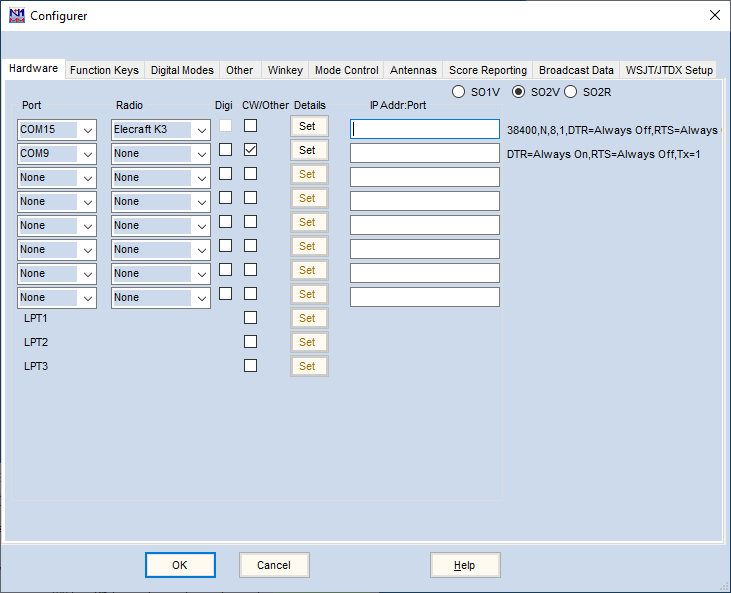
A aba Hardware é usada para configurar seus rádios, interfaces de packet, conexões Telnet, portas de CW/PTT/digital e as interfaces com outros dispositivos, como controladores SO2R, interfaces multifuncionais e keyers, quando estes exigem portas seriais ou paralelas. Ajuste os valores de acordo com sua estação. Se você não tiver nenhum dos itens listados conectado a uma porta, garanta que a seleção da porta esteja em 'None' e que as caixas de seleção não estejam marcadas para aquela porta.
Hardware setup options (Opções de configuração de hardware)
O programa suporta até 8 portas seriais, cada uma podendo estar em qualquer ponto da faixa COM1-COM99, e 3 portas paralelas (LPT1 – LPT3).
Configure cada porta de acordo com o equipamento conectado e informe os dados apropriados.
Segue uma explicação mais detalhada de cada controle desta janela.
- Port – para cada dispositivo a ser conectado via porta COM, o número da porta COM é selecionado nesta coluna em uma lista suspensa:
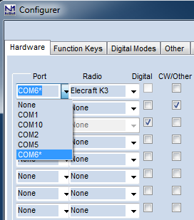
Este exemplo mostra um caso em que três portas COM estão em uso. A COM6 é usada para controle de rádio de um Elecraft K3. A COM2 é usada por um Winkeyer para chaveamento de CW. A COM10 está conectada a um TNC ou terminal para RTTY. O rádio tem dois receptores e o programa está configurado para SO2V (Single Operator, 2 VFOs), com duas Entry windows, uma para cada VFO/receptor.
- Esta lista mostra todas as portas COM que o programa conseguiu abrir. Neste exemplo, COM1, COM2, COM5 e COM10 foram encontradas pelo programa quando a janela do Configurer foi aberta. Essas portas podem incluir portas seriais reais, adaptadores USB-serial e/ou portas seriais virtuais criadas por drivers de software (ex.: microHam Router, LP-Bridge etc.)
- A COM6 também aparece na lista de exemplo acima, mas com um asterisco ao lado. O asterisco indica que essa porta estava configurada previamente nessa posição no arquivo N1MM Logger.ini, mas ao abrir o Configurer o programa não conseguiu abri-la. Isso pode acontecer se um adaptador USB-serial for desconectado, ou se outro software que antes criava uma porta serial virtual não estiver em execução no momento em que o Configurer é aberto
- Se esse dispositivo com asterisco for deixado configurado na COM6, ao sair do Configurer o programa vai avisar que não conseguiu abrir a porta. A função que deveria ser fornecida por essa porta ficará indisponível. Isso pode ser corrigido conectando o adaptador USB ou recriando a porta virtual no outro software, e então reabrindo e fechando o Configurer
- Se outra porta COM for selecionada na lista, a porta COM ausente indicada pelo asterisco desaparece da lista suspensa
- Uma das opções na lista de portas é TCP. Usada para rádios que suportam controle via TCP (Ethernet) – para isso você vai precisar de um cabo Ethernet da porta LAN do rádio até seu roteador (ou um switch Ethernet ou ponto de acesso Wi-Fi conectado à sua rede). Se TCP for selecionado, informe o endereço IP e a porta TCP usados pelo rádio no campo da coluna IP Addr:Port. Consulte a documentação do seu rádio para saber como determinar o endereço IP e o número da porta
- Radio – A lista suspensa nesta coluna é usada para selecionar qual rádio será interfaceado com o programa usando essa porta para controle de rádio, ou seja, controle de frequência e modo. No máximo dois rádios podem ser conectados. Selecione 'None' se esta porta não for usada para controle de rádio. Se você tem apenas um rádio conectado, somente uma das caixas desta coluna deve estar configurada com algo diferente de "None"
- Digital – Marcar esta caixa indica que a porta é usada para comunicação digital (mecanismo MMTTY/MMVARI/Fldigi ou TNC). Esta caixa não pode ser marcada se a porta for usada para controle de rádio. Da mesma forma, se ela estiver marcada, a lista suspensa da coluna Radio fica desabilitada. Nem toda porta usada para comunicação digital precisa ser configurada aqui; marque esta caixa apenas se uma das condições abaixo se aplicar:
- Use para indicar uma porta usada por um TU ou TNC de RTTY
- Use para indicar uma porta usada para PTT a partir do MMVARI em modos digitais. Não é necessário com os mecanismos digitais externos (MMTTY, 2Tone e Fldigi), apenas com o MMVARI
- Use para indicar uma porta que será compartilhada no tempo entre modos digitais e não digitais. Pode ser, por exemplo, uma porta usada para chaveamento de CW por porta serial quando o modo é CW, e para FSK e/ou PTT quando o modo é RTTY. A caixa CW/Other também deve ser marcada para essa porta compartilhada
- Se a única vez que a porta é usada em modos digitais for a partir do MMTTY, 2Tone ou Fldigi, não é necessário marcar esta caixa; basta configurar a porta diretamente dentro do mecanismo digital, sem configurá-la no Configurer
- Se você controla o PTT pela porta de controle do rádio ou por um Winkeyer, não marque a caixa Digital para essa porta
- Se você está usando uma porta para chaveamento FSK com o MMTTY ou MMVARI via o add-in EXTFSK ou EXTFSK64, a porta não pode ser compartilhada no tempo, e portanto você não marcaria a caixa Digital para essa porta
- CW/Other – Marque esta caixa se a porta for usada para CW chaveado por hardware ou PTT, um Winkeyer, um footswitch, um DVK ou um controlador SO2R. Não é necessário marcar esta caixa para habilitar PTT via comandos de controle de rádio; isso é feito por uma caixa separada na janela de configuração da porta. A seleção CW/Other pode ser combinada com uma seleção de Radio ou Digital, desde que os usos sejam compatíveis (por exemplo, chaveamento de CW na linha DTR pode ser compatível com controle de rádio na mesma porta, se sua interface de hardware suportar). Além das portas seriais, a caixa CW/Other também pode ser marcada em uma ou mais portas paralelas (LPT1/2/3) para chaveamento de CW ou PTT ou outros tipos de controle de dispositivo
Para configurar uma porta para um Winkeyer, primeiro selecione a porta usada pelo Winkeyer na coluna mais à esquerda da aba Hardware. Depois marque a caixa CW/Other nessa mesma linha. Por fim, clique no botão Set e marque a caixa Winkeyer na janela que aparece. Fora possivelmente a caixa Radio Nr, não é necessário alterar mais nada nessa janela; os padrões já são feitos para funcionar com um Winkeyer.
Ter várias portas configuradas para CW ou PTT pode causar problemas; por exemplo, ter dois métodos de controle de PTT ativos ao mesmo tempo pode fazer o rádio não comutar para transmissão ou, pior, travar em transmissão no fim de uma mensagem de tecla de função. Isso é especialmente problemático em alguns rádios quando um dos métodos é PTT via comando de rádio e o outro é um método de chaveamento por hardware. Escolha um método de chaveamento de CW e um método de controle de PTT, marque a caixa CW/Other para a(s) porta(s) necessária(s) e complete a configuração da porta usando o botão Set, e garanta que CW/Other não esteja marcado nas portas que você não está usando no momento. Note que a saída de PTT de um Winkeyer fica ativa em SSB e RTTY, além de CW, ou seja, se você usa essa saída do Winkeyer, não precisa de um método separado de PTT para SSB ou RTTY. Em modos digitais, não configure o controle de PTT pelo mecanismo digital (MMTTY ou Fldigi) se você já tem o controle de PTT operando a partir do programa principal do N1MM Logger.
- Details – Clique no botão Set nesta coluna para abrir uma janela com um conjunto de controles que depende do que está selecionado nas colunas anteriores (Radio, Digital, Packet, CW/Other). À direita da coluna Details fica um resumo das configurações detalhadas. Veja os detalhes abaixo.
- IP Addr:Port – Usado apenas para rádios que utilizam TCP em vez de porta serial para controle de rádio, ou controlados via um adaptador TCP-serial. Digite TCP no número da porta na coluna Port, e informe o endereço IP e o número da porta TCP do rádio no campo da coluna IP Addr:Port.
Os botões de opção (radio buttons) no canto superior direito ajustam o programa para o modo de operação desejado.
- SO1V – Single Operator 1 VFO
- Usado com uma única Entry window; é o modo normal de operação para um rádio de um único receptor. No modo SO1V, as teclas barra invertida, Pause, Ctrl+seta direita, acento grave (`) e Ctrl+Alt+K ficam desabilitadas para impedir a abertura da segunda Entry window. Se a segunda Entry window e/ou a janela Bandmap estivessem abertas quando o Configurer foi aberto, elas serão fechadas ao sair do Configurer após selecionar SO1V
- SO2V – Single Operator 2 VFO (um rádio, usando os dois VFOs)
- Permite usar duas Entry windows separadas, uma para cada VFO; a funcionalidade completa de SO2V só é utilizável com rádios de recepção dupla
- SO2R – Single Operator 2 Radios
- Permite usar duas Entry windows separadas, uma para cada rádio
Set Button Examples (Exemplos do botão Set)
Seguem alguns exemplos da janela que aparece quando você clica no botão Set.
Radio Control Port (Porta de Controle do Rádio)
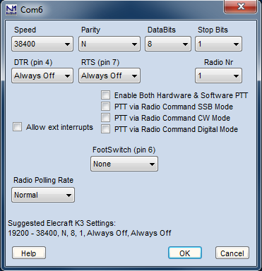
Para uma porta selecionada para controle de rádio:
- Speed – A velocidade da porta serial (consulte o manual do seu rádio)
- Parity – A paridade usada (consulte o manual do seu rádio)
- Data Bits – O número de bits de dados (consulte o manual do seu rádio)
- Stop Bits – O número de bits de parada (consulte o manual do seu rádio)
- DTR – As seguintes opções podem ser definidas para o DTR (pino 4 do conector DB9):
- PTT – usado para colocar o rádio em transmissão
- CW – usado para enviar CW ao rádio
- Nota: As opções PTT e CW exigem um circuito de chaveamento entre o DTR e a entrada de PTT ou o conector de chave CW do rádio, ou um transceptor que aceite chaveamento direto na linha DTR da porta de controle (como um Elecraft K3). A caixa CW/Other dessa porta na janela principal do Configurer precisa estar marcada para habilitar o chaveamento de PTT ou CW via DTR
- Always on – DTR sempre em nível alto ('high')
- Always off – DTR sempre em nível baixo ('low')
- Handshake – DTR usado para handshaking
- RTS – As mesmas opções do DTR podem ser definidas para o RTS (pino 7 do conector DB9):
- PTT – usado para colocar o rádio em transmissão
- CW – usado para enviar CW ao rádio
- Nota: As opções PTT e CW exigem um circuito de chaveamento entre o RTS e a entrada de PTT ou o conector de chave CW do rádio, ou um transceptor que aceite chaveamento direto na linha RTS da porta de controle (como um Elecraft K3). A caixa CW/Other dessa porta na janela principal do Configurer precisa estar marcada para habilitar o chaveamento de PTT ou CW via RTS
- Always on – RTS sempre em nível alto ('high')
- Always off – RTS sempre em nível baixo ('low')
- Handshake – RTS usado para handshaking
- Quando RTS e DTR estão ambos definidos como PTT, os dois são chaveados para PTT com o PTT delay configurado
- Ao usar uma interface autoalimentada para controle de rádio, defina DTR e/ou RTS como Always On para fornecer energia à interface
- Icom Addr (hex) – O endereço hexadecimal do rádio. Digite sem o "H", ou seja, 26 e não 26H. Este campo só aparece quando um rádio Icom é o rádio selecionado
- Radio Nr – O rádio controlado por esta porta:
- Em SO1V (um rádio, um VFO usado) Radio Nr = 1
- Em SO2V (um rádio, dois VFOs) Radio Nr = 1
- Em SO2R, selecione o rádio (1 ou 2) controlado por esta porta
- PTT Delay (msec) – Esta caixa só aparece se DTR ou RTS estiver definido como PTT. É usada para configurar um atraso entre o momento em que o sinal de PTT é acionado e o início do envio de CW, para evitar hot-switching
- Enable Both Hardware & Software PTT – Esta caixa permite usar métodos de controle de PTT por hardware e por software ao mesmo tempo. USE COM CUIDADO. Em alguns rádios, usar PTT por software e por hardware simultaneamente pode causar problemas, como o rádio travar em transmissão no fim de mensagens de CW ou RTTY
- Allow ext. interrupts – Permite interrupções externas nesta porta (DSR – pino 6), por exemplo de um footswitch. Uma interrupção nessa linha traz o foco para a Entry window e interrompe um CQ em andamento. Veja as configurações de FootSwitch abaixo
- PTT via Radio Command Digital Mode – Se marcada, um comando de rádio por software será usado para controlar o PTT em modos digitais
- PTT via Radio Command SSB Mode – Se marcada, um comando de rádio por software será usado para controlar o PTT em modos SSB
- PTT via Radio Command CW Mode – Se marcada, um comando de rádio por software será usado para controlar o PTT em modo CW
- Usando essas caixas seletivamente, você pode controlar o PTT em alguns modos e não em outros (por exemplo, controlando o PTT em modos digitais para FSK RTTY enquanto usa VOX para SSB e QSK para CW)
- FootSwitch – É possível conectar um footswitch separado a cada porta serial ou paralela. É necessário um resistor de pull-up (veja a seção Interfacing do manual para instruções detalhadas). Múltiplos footswitches (um por porta serial ou paralela) podem ser usados, cada um com configurações próprias.
Se a interface permitir isolá-la separadamente, a entrada DSR (pino 6 de uma porta serial de 9 pinos) pode ser usada para uma das opções abaixo. A caixa de interrupções externas na porta de controle de rádio NÃO deve ser marcada na maioria das aplicações. Ela faz o programa executar código adicional que pode afetar a operação de controle do rádio. Para todas as opções de footswitch, exceto "First One Wins", a entrada DSR deve estar em nível baixo (0V ou negativo) quando o footswitch não está pressionado, e em nível alto (maior que 3V) quando pressionado. O footswitch age sobre o rádio "ativo". A seleção da caixa RadioNr não é usada (é ignorada) para o footswitch.- None – Nenhum footswitch nesta porta serial
- ESM Enter – Pressionar o Footswitch (transição do DSR de baixo para alto) provoca a mesma ação que pressionar Enter no modo ESM
- Typing Focus – Pressionar o Footswitch (transição do DSR de baixo para alto) alterna o foco de digitação
- Switch Radios – Pressionar o Footswitch (transição do DSR de baixo para alto) troca de rádio (em SO2R)
- Normal – Pressionar o footswitch se comporta como se estivesse ligado ao PTT do transmissor ativo (rádio com foco de TX ou ponto vermelho)
- F1 a F4, F11, F12 – Pressionar o Footswitch (transição do DSR de baixo para alto) executa a mesma ação que pressionar a respectiva tecla de função
- Band lockout – Implementado principalmente para estações multi-operador, para bloquear um segundo sinal na mesma banda/modo. Também pode ser útil para operadores únicos. Este modo permite controlar o PTT dos dois rádios (em SO2R) em modos diferentes (SSB/CW). A vantagem em relação a um footswitch ligado diretamente ao rádio é que ele impede o AutoCQ e CQs duelando entre si (Dueling CQs). Múltiplos footswitches são suportados, mas Band Lockout e First One Wins não podem ser usados no mesmo computador
- First One Wins – Esta opção é destinada a estações multi que querem impedir que outros transmissores comecem a transmitir. O computador precisa ter o modo de rede habilitado. A entrada DSR fica ativa em nível baixo (0V ou negativo) e deve ser ligada a uma linha de PTT de coletor aberto da estação parceira. Antes de a estação começar a transmitir, o estado da entrada DSR é verificado. Se estiver em nível baixo (indicando que a estação parceira está transmitindo), esta estação não vai transmitir. Note que a lógica do DSR aqui é invertida em relação às opções de footswitch acima. Eleve o DSR a nível alto (maior que 3V) com um resistor e conecte a entrada DSR ao PTT de coletor aberto (ativo em nível baixo) da estação parceira. Se mais de uma estação precisar ser interligada, adicione um diodo em série na linha de PTT de coletor aberto, criando um circuito wire-OR. Múltiplos footswitches são suportados, mas Band Lockout e First One Wins não podem ser usados no mesmo computador
- Esc – Esta opção executa o código da tecla Esc quando a entrada DSR transiciona de baixo para alto
- Radio Polling Rate – use esta opção para alterar a taxa com que o rádio é consultado (polling) – Normal, 50% Slower ou 100% Slower. A opção 50% Slower aumenta o tempo entre consultas para 1,5 vez o normal, e 100% Slower aumenta para 2 vezes o normal
- Help – exibe a ajuda do Configurer a partir do manual on-line
- OK – salva as configurações e fecha esta janela
- Cancel – fecha esta janela sem salvar as configurações
CW/Other Serial Port (Porta Serial de CW/Outros)
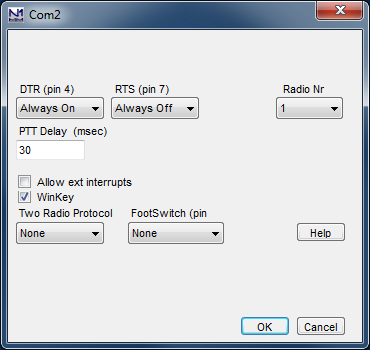
Para uma porta cuja caixa CW/Other está marcada:
- DTR – As seguintes opções podem ser definidas para o DTR (pino 4 do conector DB9):
- PTT – usado para colocar o rádio em transmissão
- CW – usado para enviar CW ao rádio
- Nota: As opções PTT e CW exigem um circuito de chaveamento entre o DTR e a entrada de PTT ou o conector de chave CW do rádio. A caixa CW/Other dessa porta na janela principal do Configurer precisa estar marcada para habilitar o chaveamento de PTT ou CW via DTR
- Always on – DTR sempre em nível alto ('high')
- Always off – DTR sempre em nível baixo ('low')
- Handshake – DTR usado para handshaking
- RTS – As mesmas opções do DTR podem ser definidas para o RTS (pino 7 do conector DB9):
- PTT – usado para colocar o rádio em transmissão
- CW – usado para enviar CW ao rádio
- Nota: As opções PTT e CW exigem um circuito de chaveamento entre o RTS e a entrada de PTT ou o conector de chave CW do rádio. A caixa CW/Other dessa porta na janela principal do Configurer precisa estar marcada para habilitar o chaveamento de PTT ou CW via RTS
- Always on – RTS sempre em nível alto ('high')
- Always off – RTS sempre em nível baixo ('low')
- Handshake – RTS usado para handshaking
- Radio Nr – O rádio com que esta porta é usada:
- Em SO1V (um rádio, um VFO usado) Radio Nr = 1
- Em SO2V (um rádio, dois VFOs) Radio Nr = 1
- Em SO2R, selecione o rádio (1 ou 2) com que esta porta é usada
- PTT Delay (msec) – Usada para configurar um atraso entre o momento em que o sinal de PTT é acionado e o início do envio de CW, para evitar, por exemplo, o hot-switching de um amplificador
- Allow ext. interrupts – Permite interrupções externas nesta porta (DSR – pino 6), por exemplo de um footswitch. Uma interrupção nessa linha traz o foco para a Entry window e interrompe um CQ em andamento
- Winkey – Selecione ao usar um Winkeyer. Não é necessário ajustar Speed, Parity, Data bits, Stop bits ou Handshake; eles são fixos, definidos pelo programa. As configurações do keyer são feitas na aba Winkeyer do Configurer. Se você selecionar Winkeyer, NÃO defina o DTR como CW.
- Nota: apenas um Winkeyer é suportado, mas um único Winkeyer pode chavear dois rádios
- Two Radio Protocol – Suporte a um controlador SO2R usando uma porta COM. Isso permite controle SO2R apenas via USB (sem necessidade de porta LPT). O protocolo usado pode ser o protocolo proprietário da microHam (MK2R) ou o OTRSP (Open Two Radio Switching Protocol)
- Mais informações no capítulo sobre hardware suportado
- FootSwitch – É possível conectar um footswitch separado a cada porta serial ou paralela. É necessário um resistor de pull-up (veja a seção Interfacing do manual para instruções). Múltiplos footswitches (um por porta) podem ser usados, cada um com configurações próprias.
O pino 6 da porta serial pode ser usado para uma das opções abaixo (se as interrupções externas estiverem habilitadas nesta porta). O footswitch age sobre o rádio "ativo". A seleção da caixa RadioNr não é usada (é ignorada) para o footswitch.- None – Nenhum footswitch nesta porta serial
- ESM Enter – Pressionar o Footswitch provoca a mesma ação que pressionar Enter no modo ESM
- Typing Focus – Pressionar o Footswitch alterna o foco de digitação
- Switch Radios – Pressionar o Footswitch troca de rádio (em SO2R)
- Normal – Pressionar o footswitch se comporta como se estivesse ligado ao PTT do transmissor ativo, conectando-se automaticamente ao rádio ativo. Ao soltar o footswitch, o foco volta para a Entry window principal
- F1 a F4, F11, F12 – Pressionar o Footswitch executa a mesma ação que pressionar a respectiva tecla de função
- Band lockout – Implementado principalmente para estações multi-operador, para bloquear um segundo sinal na mesma banda/modo. Também útil para operadores únicos. Permite controlar o PTT dos dois rádios (em SO2R) em modos diferentes (SSB/CW). A vantagem em relação a um footswitch ligado diretamente ao rádio é que impede o AutoCQ e CQs duelando entre si. Múltiplos footswitches são suportados, mas Band Lockout e First One Wins não podem ser usados no mesmo computador
- First One Wins – Modo destinado a estações multi que querem impedir que outros transmissores comecem a transmitir. A entrada fica ativa em nível baixo (0V ou negativo) e deve ser ligada a uma linha de PTT de coletor aberto da estação parceira. A lógica é invertida em relação às opções de footswitch acima. Eleve o pino 6 a nível alto (maior que 3V) com um resistor e conecte a entrada ao PTT de coletor aberto (ativo em nível baixo) da estação parceira. Se mais de uma estação precisar ser interligada, adicione um diodo em série na linha de PTT de coletor aberto, criando um circuito wire-OR. Antes de a estação começar a transmitir, o estado da entrada é verificado; se em nível baixo (estação parceira transmitindo), a estação atual não vai transmitir. Múltiplos footswitches são suportados, mas Band Lockout e First One Wins não podem ser usados no mesmo computador
- Help – exibe a ajuda do Configurer a partir do manual on-line
- OK – salva as configurações e fecha esta janela
- Cancel – fecha esta janela sem salvar as configurações
Digital Serial Port (Porta Serial Digital)
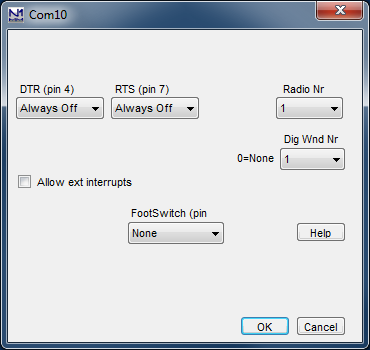
Para uma porta COM cuja caixa Digital foi marcada, seja para usar um TNC ou para compartilhar a porta no tempo:
- DTR – As seguintes opções podem ser definidas para o DTR (pino 4 do conector DB9); se a porta for compartilhada no tempo, essas opções só se aplicam em modos não digitais:
- PTT – usado para colocar o rádio em transmissão
- CW – usado para enviar CW ao rádio
- Nota: As opções PTT e CW exigem um circuito de chaveamento entre o DTR e a entrada de PTT ou o conector de chave CW do rádio. A caixa CW/Other dessa porta na janela principal do Configurer precisa estar marcada para habilitar o chaveamento de PTT ou CW via DTR
- Always on – DTR sempre em nível alto ('high')
- Always off – DTR sempre em nível baixo ('low')
- Handshake – DTR usado para handshaking
- RTS – As mesmas opções podem ser definidas para o RTS (pino 7 do conector DB9); se a porta for compartilhada no tempo, essas opções só se aplicam em modos não digitais
- PTT – usado para colocar o rádio em transmissão
- CW – usado para enviar CW ao rádio
- Nota: As opções PTT e CW exigem um circuito de chaveamento entre o RTS e a entrada de PTT ou o conector de chave CW do rádio. A caixa CW/Other dessa porta na janela principal do Configurer precisa estar marcada para habilitar o chaveamento de PTT ou CW via RTS
- Always on – RTS sempre em nível alto ('high')
- Always off – RTS sempre em nível baixo ('low')
- Handshake – RTS usado para handshaking
- Radio Nr – O rádio com que esta porta é usada:
- Em SO1V (um rádio, um VFO usado) Radio Nr = 1
- Em SO2V (um rádio, dois VFOs) Radio Nr = 1
- Em SO2R, selecione o rádio (1 ou 2) com que esta porta é usada
- Dig Wnd Nr – Precisa ser definido para indicar qual Digital Interface window usa esta porta. Se for 0, a porta não será usada em modos digitais
- Se apenas uma janela DI for usada (ex.: SO1V), selecione 1
- Se duas janelas DI forem usadas, selecione o número da janela DI para a qual esta porta será usada
- Allow ext. interrupts – Permite interrupções externas nesta porta (DSR – pino 6), por exemplo de um footswitch. Uma interrupção nessa linha traz o foco para a Entry window e interrompe um CQ em andamento; apenas em modos não digitais
- FootSwitch – É possível conectar um footswitch separado a cada porta serial ou paralela. É necessário um resistor de pull-up (veja a seção Interfacing do manual para instruções). Múltiplos footswitches (um por porta) podem ser usados, cada um com configurações próprias.
O pino 6 da porta serial pode ser usado para uma das opções abaixo (se a interface permitir isolar esta linha e as interrupções externas estiverem habilitadas nesta porta). O footswitch age sobre o rádio "ativo". A seleção da caixa RadioNr não é usada (é ignorada) para o footswitch.- None – Nenhum footswitch
- ESM Enter – Pressionar o Footswitch provoca a mesma ação que pressionar Enter no modo ESM
- Typing Focus – Pressionar o Footswitch alterna o foco de digitação
- Switch Radios – Pressionar o Footswitch troca de rádio (em SO2R)
- Normal – Pressionar o footswitch se comporta como se estivesse ligado ao PTT do transmissor ativo, conectando-se automaticamente ao rádio ativo. Ao soltar o footswitch, o foco volta para a Entry window principal
- F1 a F4, F11, F12 – Pressionar o Footswitch executa a mesma ação que pressionar a respectiva tecla de função
- Band lockout – Implementado principalmente para estações multi-operador. Permite controlar o PTT dos dois rádios (em SO2R) em modos diferentes (SSB/CW), impedindo o AutoCQ e CQs duelando entre si. Múltiplos footswitches são suportados, mas Band Lockout e First One Wins não podem ser usados no mesmo computador
- First One Wins – Modo destinado a estações multi que querem impedir que outros transmissores comecem a transmitir. A entrada DSR fica ativa em nível baixo (0V ou negativo) e deve ser ligada a uma linha de PTT de coletor aberto da estação parceira. A lógica é invertida em relação às opções de footswitch acima. Eleve o DSR a nível alto (maior que 3V) com um resistor e conecte a entrada DSR ao PTT de coletor aberto (ativo em nível baixo) da estação parceira. Se mais de uma estação precisar ser interligada, adicione um diodo em série na linha de PTT de coletor aberto, criando um circuito wire-OR. Antes de a estação começar a transmitir, o estado da entrada DSR é verificado; se em nível baixo (estação parceira transmitindo), a estação atual não vai transmitir. Múltiplos footswitches são suportados, mas Band Lockout e First One Wins não podem ser usados no mesmo computador
- Help – exibe a ajuda do Configurer a partir do manual on-line
- OK – salva as configurações e fecha esta janela
- Cancel – fecha esta janela sem salvar as configurações
Parallel (LPT) Port (Porta Paralela LPT)
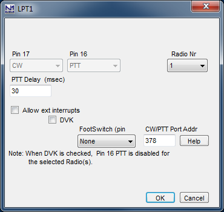
Para uma porta LPT:
- Pino 17 – sempre usado para chaveamento de CW; aparece acinzentado porque não pode ser alterado
- Pino 16 – usado para PTT, exceto quando um DVK externo é usado; aparece acinzentado porque não pode ser alterado
- Radio Nr – O rádio com que esta porta é usada:
- Em SO1V (um rádio, um VFO usado) Radio Nr = 1
- Em SO2V (um rádio, dois VFOs) Radio Nr = 1
- Em SO2R sem uma caixa SO2R de controle automático, selecione o rádio (1 ou 2) com que esta porta é usada
- Se estiver usando uma caixa SO2R por LPT, defina o Radio Nr da primeira porta LPT como Both. O pino 14 será usado para selecionar o rádio para CW, PTT etc.
- Se estiver usando linhas de dados de banda nessa configuração, os dados de banda do primeiro rádio são roteados para a primeira porta LPT (Radio Nr = Both) e os do segundo rádio para a segunda porta LPT (Radio Nr = 2)
Em SO2R e CW por LPT, a porta de MENOR número precisa ter a saída de CW definida como BOTH se for usada com uma caixa SO2R convencional por LPT (DXD, KK1L, N6BV etc.) ou com o microHAM MK2R/MK2R+ em modo LPT (Classic auto control). A LPT com CW, PTT e os controles de TX/RX/Split deve estar conectada ao controlador SO2R. Se o N1MM estiver configurado para CW em DUAS portas LPT (primeira porta: Radio=1, segunda porta: Radio=2), o CW só estará presente na porta correspondente ao rádio com foco de transmissão.
- PTT Delay (msec) – Usada para configurar um atraso entre o acionamento do PTT e o início do envio de CW, para evitar, por exemplo, o hot-switching de um amplificador
- Allow ext. interrupts – Permite interrupções externas pelo pino 15, por exemplo de um footswitch. Uma interrupção nessa linha traz o foco para a Entry window e interrompe um CQ em andamento
- DVK – Interface DVK para MK2R, W9XT e outros DVKs externos. Veja esta página para informações detalhadas, pinagem e limitações
- Quando DVK é selecionado, a seleção de antena via porta LPT fica desabilitada (os pinos do DVK e os pinos de antena na porta LPT se sobrepõem)
- Ao usar um DVK externo, todas as teclas de função SSB de Run e S&P devem ser definidas como empty.wav, e não deixadas em branco
- microHAM MK2R: se DVK estiver marcado, o N1MM Logger vai usar o DVK do Router em vez do seu próprio suporte a DVK
- FootSwitch – É possível conectar um footswitch separado a cada porta serial ou paralela. É necessário um resistor de pull-up entre a entrada do footswitch (pino 15 da porta paralela) e +5 VDC (veja a seção Interfacing do manual para instruções). Múltiplos footswitches (um por porta) podem ser usados, cada um com configurações próprias.
O pino 15 da porta paralela pode ser usado para uma das opções abaixo. O footswitch age sobre o rádio "ativo". A seleção da caixa RadioNr não é usada (é ignorada) para o footswitch.- None – Nenhum footswitch
- ESM Enter – Pressionar o Footswitch provoca a mesma ação que pressionar Enter no modo ESM
- Typing Focus – Pressionar o Footswitch alterna o foco de digitação
- Switch Radios – Pressionar o Footswitch troca de rádio (em SO2R)
- Normal – Pressionar o footswitch se comporta como se estivesse ligado ao PTT do transmissor ativo, conectando-se automaticamente ao rádio ativo. Ao soltar o footswitch, o foco volta para a Entry window principal
- F1 a F4, F11, F12 – Pressionar o Footswitch executa a mesma ação que pressionar a respectiva tecla de função
- Band lockout – Implementado principalmente para estações multi-operador. Permite controlar o PTT dos dois rádios (em SO2R) em modos diferentes (SSB/CW), impedindo o AutoCQ e CQs duelando entre si. Múltiplos footswitches são suportados, mas Band Lockout e First One Wins não podem ser usados no mesmo computador
- First One Wins – Modo destinado a estações multi que querem impedir que outros transmissores comecem a transmitir. A entrada fica ativa em nível baixo (0V ou negativo) e deve ser ligada a uma linha de PTT de coletor aberto da estação parceira. A lógica é invertida em relação às opções de footswitch acima. Eleve o pino a nível alto (maior que 3V) com um resistor e conecte a entrada ao PTT de coletor aberto (ativo em nível baixo) da estação parceira. Se mais de uma estação precisar ser interligada, adicione um diodo em série na linha de PTT de coletor aberto, criando um circuito wire-OR. Antes de a estação começar a transmitir, o estado da entrada é verificado; se em nível baixo (estação parceira transmitindo), a estação atual não vai transmitir. Múltiplos footswitches são suportados, mas Band Lockout e First One Wins não podem ser usados no mesmo computador
- CW/PTT Port Addr – especifica o endereço da porta (Obrigatório!)
- O endereço padrão inicial nesta caixa, quando houver, pode não ser correto em alguns computadores ou para algumas placas adicionais; se a porta não funcionar, verifique as propriedades da porta no Gerenciador de Dispositivos para determinar o endereço correto. Há mais informações sobre este tópico no capítulo Interfacing
- Help – exibe a ajuda do Configurer a partir do manual on-line
- OK – salva as configurações e fecha esta janela
- Cancel – fecha esta janela sem salvar as configurações
Sinais adicionais também estão presentes na porta paralela. Veja o capítulo Interfacing para informações mais detalhadas.
PTT Options (Opções de PTT)
Originalmente, Push-to-Talk (PTT) era, na verdade, um termo registrado, descrevendo como operadores dos rádios de uma determinada empresa podiam pressionar um botão no microfone para alternar de recepção para transmissão. Com os anos, porém, passou a designar qualquer forma de comutação transmissão/recepção externa ao rádio. Pode ser algo simples como um botão no microfone ou um footswitch ligado diretamente ao rádio, ou algo tão sofisticado quanto o controle por um programa de log.
O N1MM Logger+ oferece várias opções. Como descrito acima, você deve escolher apenas uma delas:
- PTT via porta serial ou paralela – Usa as linhas RTS ou DTR de uma porta serial, ou o pino 16 de uma porta LPT. Esse método mais ou menos padronizado geralmente exige uma interface simples de um transistor para comutar o rádio. Adaptadores USB-serial podem ser usados para essa função; adaptadores USB-paralela (impressora) comuns não funcionam, pois não conseguem controlar linhas individuais da interface paralela — a única exceção é a interface SO2RXLAT desenvolvida pela PIEXX.
- PTT via Winkeyer – Se um Winkeyer, um keyer que emula o Winkeyer, ou uma interface que incorpore um chip Winkeyer for usado, sua saída de PTT pode ser usada em todos os modos para controlar a comutação transmissão/recepção.
- PTT via comando de rádio – Para rádios que suportam, esta opção elimina a necessidade de qualquer hardware externo além de um cabo de porta serial ou um conversor serial-USB. Consulte o manual do seu rádio para detalhes.
Aviso: no momento, não há como controlar o PTT do rádio via comando de rádio e, ao mesmo tempo, introduzir um atraso antes de o Logger começar a enviar uma mensagem armazenada; portanto, se você precisa proteger equipamento externo (veja abaixo), não use esta opção.
PTT Delay (Atraso de PTT)
Este é um aspecto importante da operação de PTT. Alguns amplificadores são mais lentos que muitos rádios, então, se o rádio começar a transmitir assim que o PTT for acionado, isso pode causar hot-switching dos relés internos de transmissão/recepção do amplificador, o que pode danificá-lo. Além disso, em operação de VHF, pré-amplificadores localizados na antena podem precisar de um sequenciamento adequado para evitar danos causados pelo RF transmitido.
- No caso de PTT via porta serial ou paralela, esse atraso é configurado no Configurer, na aba Hardware, ao configurar uma porta para PTT. Note que, em uma porta serial, essa opção só aparece se você tiver selecionado PTT em RTS ou DTR.
- Para PTT via Winkeyer, defina esse atraso (chamado de lead-time na terminologia do Winkeyer) na aba Winkeyer do Configurer. Isso afeta tanto o CW manual quanto as mensagens armazenadas. Você provavelmente vai notar que qualquer valor acima de 20 milissegundos (provavelmente suficiente para a maioria dos amplificadores) atrapalha o CW enviado manualmente.
Other Information (Outras Informações)
Em sistemas Windows de 32 e 64 bits, usar as portas paralela e serial para PTT e chaveamento de CW exige uma dll especial chamada inpout32.dll. Essa dll é instalada junto com o Logger, mas, se por algum motivo o arquivo não for instalado, informações sobre como encontrá-lo e instalá-lo estão no capítulo de Instalação.
Function Keys Tab (Aba de Teclas de Função)
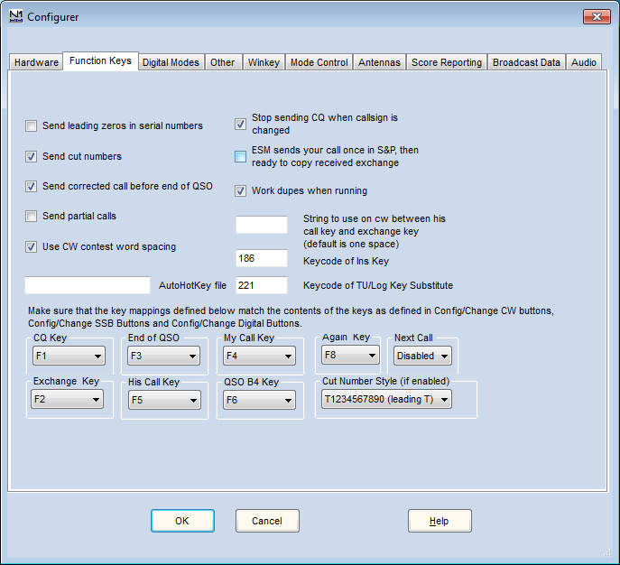
A operação das teclas de função é controlada nesta aba.
Descrição dos campos de Function Keys
- Send leading zeros in serial numbers – Números seriais, enviados pela macro # ou pela macro {EXCH} (se o campo Sent Exchange no Contest Setup contiver 001), podem ser enviados com ou sem zeros à esquerda (ex.: 003 ou apenas 3), dependendo desta opção. Em CW, a opção "cut numbers" pode ser usada para enviar os zeros à esquerda como T ou O em vez de 0. Esta opção não afeta números que não sejam números seriais
- Send cut numbers – Em CW, faz os números seriais serem enviados usando o Cut Number Style definido no fim da janela. Ctrl+G alterna esta opção durante a operação; o novo status aparece na linha de status no rodapé da Entry window. Números que não sejam números seriais não são afetados. Esta opção não se aplica a SSB ou modos digitais
- Send corrected call before end of QSO – Se o indicativo no campo de indicativo for alterado (corrigido) depois de responder a uma chamada e enviar seu exchange, mas antes de o contato ser logado, o indicativo corrigido (do campo de indicativo) será enviado pela End of QSO Key (ou qualquer outra ação que a acione, como a tecla ' ou Enter no modo ESM) antes da mensagem de fim de QSO, ex.: 'PA1M TU DE N1MM' em vez de 'TU DE N1MM'. Se F3 não for pressionada até depois de o contato já ter sido logado, o indicativo corrigido não será enviado. Em modos de voz, se a tecla F3 tocar um arquivo wav, o programa vai usar arquivos wav de letra/número para enviar o indicativo primeiro
- Send partial calls – Somente CW. Ao enviar um indicativo corrigido usando a opção anterior, apenas a parte corrigida será enviada (prefixo ou sufixo). Se desmarcada, o indicativo completo será enviado
- AutoHotKey file – Digite aqui o nome de qualquer script AutoHotKey (.ahk) que você queira que seja iniciado e encerrado junto com o N1MM Logger+. Para usar esse recurso, o AutoHotKey precisa estar instalado no seu computador. Baixe-o nesta página.
- Scripts AutoHotKey são muito úteis para remapear o teclado. Exemplos podem ser encontrados na seção Third Party Software do manual. Se você colocar esse arquivo na subpasta Support Files da sua pasta de arquivos de usuário do N1MM Logger+, basta informar o nome do arquivo; caso contrário, use o caminho completo até o script em qualquer lugar do seu computador
- Use CW contest word spacing – Altera o espaçamento entre palavras no seu CW, onde "N1MM 599 5" conta como 3 palavras. O padrão é 6 unidades para o "espaçamento de contest". Quando desmarcada, usa-se espaçamento de 7 unidades, o "espaçamento normal"
- Stop sending CQ when callsign is changed – Digitar um caractere no campo de indicativo interrompe um CQ (repetido)
- ESM sends your call once in S&P, then ready to copy received exchange – Frequentemente chamada de "chave Big Gun / Little Pistol". Quando selecionada e em modo Enter Sends Message, o cursor vai para o campo Exchange quando há algo no campo de indicativo e Enter é pressionado (assim ele não fica preso no campo de indicativo). Se você normalmente não consegue uma estação na primeira chamada, desmarque esta opção. Leia mais sobre a operação Big Gun / Little Pistol na seção ESM (Enter Sends Message)
- Work dupes when running – Determina o que é enviado quando uma dupe te chama e você pressiona Enter em ESM. Normalmente você QUER trabalhar dupes, então esta caixa costuma ficar marcada. Veja o capítulo Off topic para uma discussão sobre o tema
- String to use on cw between his call key and exchange key (default is one space) – Exatamente o que diz. Exemplo: ' ur '
- Keycode of Ins Key Substitute – Informe o código da tecla substituta de Ins (para enviar o indicativo da outra estação mais o seu exchange), conforme o mapeamento nesta janela do Configurer. O padrão é 186, o caractere ;. O programa pode preencher automaticamente este campo: posicione o cursor no campo de keycode e pressione a tecla que deseja usar, que o código correto será inserido. 186 é um código de tecla estendido. Nem todos os teclados mapeiam teclas da mesma forma. Não é possível usar teclas como Shift, Ctrl, Alt etc. Não recomendamos usar uma tecla como o Numérico + que já esteja em uso — pode ou não funcionar. Nesse caso específico, o Numérico + NÃO funciona
- Keycode of TU/Log Key Substitute – Informe o código da tecla substituta de TU/Log (que combina o envio da mensagem TU com o log do contato), conforme o mapeamento nesta janela do Configurer. O padrão é 222, o caractere '. O programa pode preencher automaticamente este campo, da mesma forma descrita acima. 222 é um código de tecla estendido. Da mesma forma, o Numérico + NÃO funciona neste caso
- Cut Number Style – os seguintes estilos de números cortados (cut numbers) podem ser escolhidos:
- T1234567890 (T inicial) – o 0 inicial é substituído por T. Assim, 007 vira TT7 e 030 vira T30
- O1234567890 (O inicial) – o 0 inicial é substituído por O. Assim, 007 vira OO7 e 030 vira O30
- T123456789T (todo T) – todos os zeros são substituídos por T. Assim, 007 vira TT7 e 030 vira T3T
- O123456789O (todo O) – todos os zeros são substituídos por O. Assim, 007 vira OO7 e 030 vira O3O
- T12345678NT (TN) – todos os zeros viram T, todos os noves viram N. Assim, 097 vira TN7 e 090 vira TNT
- O12345678NO (ON) – todos os zeros viram O, todos os noves viram N. Assim, 097 vira ON7 e 090 vira ONO
- TA2345678NT (TAN) – zeros viram T, noves viram N, uns viram A. Assim, 091 vira TNA e 190 vira ANT
- TA234E678NT (TAEN) – zeros viram T, noves viram N, uns viram A, cincos viram E. Assim, 091 vira TNA e 1590 vira AENT
- TAU34E67DNT – zero, um, dois, cinco, oito e nove são substituídos por T, A, U, E, D, N respectivamente
Remapeando as Teclas de Função (Remapping Function Keys)
Selecione quais teclas de função enviam cada mensagem. Cada tipo de mensagem tem uma caixa de combinação para você definir a tecla de função apropriada. Se o programa estiver enviando a mensagem errada, verifique aqui primeiro. A única restrição é que uma tecla precisa significar a mesma coisa em Running e em S&P. As teclas de função não precisam ser únicas para uma mensagem selecionada — embora haja pouco motivo para repeti-las, é possível. As seguintes mensagens podem ter uma tecla de função selecionada:
- CQ Key – padrão F1
- Exchange Key – padrão F2
- End of QSO Key – padrão F3
- His Call Key – padrão F5
- My Call Key – padrão F4
- QSO B4 Key – padrão F6 (pode ser desabilitada)
- Again Key – padrão F8 (pode ser desabilitada)
- Next Call Key – padrão Disabled
A tabela abaixo (do manual original) descreve as combinações entre modo ESM, a opção "Work dupes when running", o modo (Run/S&P), e as teclas QSO B4/Again, mostrando o resultado de cada situação — consulte a página original em inglês para a tabela completa.
Digital Modes Tab (Aba de Modos Digitais)
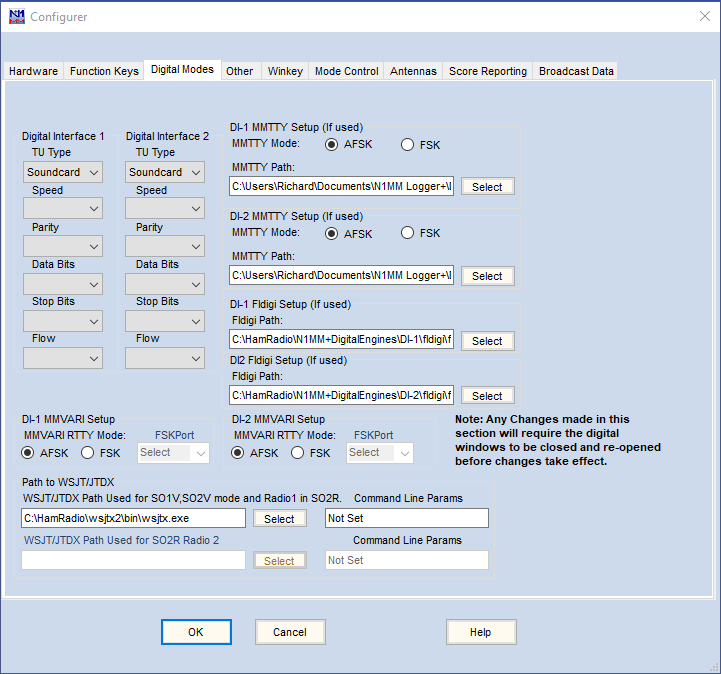
A aba Digital Modes é usada para configurar a interface com controladores externos (TNCs), ou com mecanismos digitais (MMTTY/MMVARI/Fldigi/2Tone) para modos digitais por placa de som.
No modo SO1V, existe apenas uma Digital Interface window, a DI-1. Nos modos SO2V e SO2R, existem duas janelas DI, DI-1 e DI-2. Cada janela DI está associada a uma das duas Entry windows. Cada janela DI é aberta pelo menu Window > Digital Interface na Entry window correspondente. A aba Digital Modes do Configurer é usada para configurar as duas janelas Digital Interface.
Descrição dos campos de Digital Modes
- Digital Interface 1 / 2
- TU type
- None
- Soundcard – use esta opção para MMTTY, 2Tone, MMVARI ou Fldigi via placa de som
- Other – use esta opção para um TNC ou TU como o PK-232 ou KAM
- Dxp38 – para o TU HAL DXP-38
- TinyFSK – para a interface K0SM TinyFSK
- Winkey – para a interface K1EL Winkeyer versão 3.1 ou superior
- Nota: para habilitar a interface Winkey, também é preciso marcar a caixa Enable RTTY Mode using Winkey na aba Winkey, e configurar a porta do Winkey na aba Hardware, caso ainda não tenha feito isso para CW
- Port, Speed, Parity, Data Bits, Stop Bits, Flow Control – Usados quando Other, Dxp38 ou TinyFSK é selecionado, para definir os parâmetros da porta COM usada com o TNC ou TU (ex.: 9600 baud, N, 8, 1, sem controle de fluxo para o DXP-38 ou TinyFSK)
- TU type
- DI-1 MMTTY Mode | DI-2 MMTTY mode
- Use a seção MMTTY também para o 2Tone
- Ao usar o MMTTY, selecione se está sendo usado AFSK ou FSK
- A porta serial que o MMTTY vai usar para PTT e FSK precisa ser definida no MMTTY Setup. Mais informações no capítulo de suporte ao MMTTY
- Ao usar um TinyFSK para transmissão FSK, ainda é necessária uma interface de placa de som para recepção; mesmo transmitindo via FSK, configure a interface de placa de som para AFSK
- DI-1 MMTTY Path | DI-2 MMTTY Path
- Informe aqui o caminho até o mecanismo MMTTY (ou 2Tone), incluindo o nome do arquivo do programa
- O caminho e o nome do arquivo podem ser selecionados pelos botões Select
- As duas instâncias do MMTTY devem estar em pastas separadas. Isso é obrigatório se você quiser que as configurações das duas instâncias sejam diferentes (ex.: canal esquerdo vs. direito, placas de som diferentes etc.)
- DI-1 Fldigi Path | DI-2 Fldigi Path
- Informe aqui o caminho até o mecanismo Fldigi, incluindo o nome do arquivo do programa
- O caminho e o nome do arquivo podem ser selecionados pelos botões Select
- DI-1 MMVARI RTTY Mode | DI-2 MMVARI RTTY Mode
- Ao usar o MMVARI para RTTY, selecione se está sendo usado AFSK ou FSK
- Se AFSK for selecionado, a porta serial (se houver) com a caixa Digital marcada e o Dig Wnd Nr correspondente ao número da janela DI será passada ao MMVARI quando a janela DI for aberta, para que o MMVARI a use no controle de PTT
- Se FSK for selecionado, a porta usada para controle de PTT não é passada ao MMVARI. Ela precisa ser definida na janela de configuração do FSK8250, EXTFSK ou EXTFSK64
- DI-1 MMVARI FSKPort | DI-2 MMVARI FSKPort
- AVISO: Você deve usar a opção "Run as administrator" do Windows ao iniciar o N1MM+ se quiser usar FSK com o MMVARI. Rodar o MMVARI em FSK sem usar "Run as administrator" vai travar ou derrubar o programa quando o plugin FSK8250/EXTFSK/EXTFSK64 tentar gravar seu arquivo de configuração
- Escolha FSK8250 se você usa uma porta serial de verdade, ou um dispositivo que consiga simular uma porta serial e lidar com códigos de 5 bits a 45,45 baud (isso não inclui a maioria dos adaptadores USB-serial de uso doméstico, mas inclui algumas interfaces comerciais feitas especificamente para RTTY via FSK)
- Ao abrir o MMVARI para FSK RTTY, abre uma pequena janela chamada FSK8250/16550 1.03, ou ela aparece na barra de tarefas do Windows. Nessa janela você seleciona o número da porta COM e a linha de sinal usada para PTT (RTS ou DTR). O chaveamento FSK é feito na linha TxD. Se este for um dispositivo USB que simula porta serial, marque Limiting speed na configuração do MMTTY. Você pode usar o botão _ no canto superior direito para minimizar esta janela após concluir a configuração
- Escolha EXTFSK se você usa um adaptador USB-serial comum
- Ao abrir o MMVARI para FSK RTTY, abre uma pequena janela chamada EXTFSK 1.05a, ou ela aparece na barra de tarefas do Windows. Nessa janela você seleciona o número da porta COM e as linhas de sinal usadas para chaveamento FSK (normalmente TxD) e PTT (RTS ou DTR). Você pode usar o botão _ no canto superior direito para minimizar esta janela após concluir a configuração
- Apenas em sistemas multi-core de alto desempenho, você pode escolher EXTFSK64 em vez de EXTFSK. O EXTFSK64 usa um mecanismo de temporização mais preciso que o EXTFSK, mas consome recursos significativos de CPU. Não é apropriado para sistemas baseados em XP, ou hardware com CPUs Intel/AMD dual-core antigas ou CPUs Atom. Em sistemas capazes de suportá-lo, o EXTFSK64 pode chavear FSK em velocidades diferentes de 45,45 baud, e também consegue chavear FSK a partir de portas LPT, além de adaptadores USB-serial. Veja mais detalhes sobre o EXTFSK64 no site do desenvolvedor (JA7UDE)
- Ao abrir o MMVARI para FSK RTTY, abre uma pequena janela chamada EXTFSK64, ou ela aparece na barra de tarefas do Windows. Nessa janela você seleciona o número da porta COM ou LPT e as linhas de sinal usadas para chaveamento FSK (normalmente TxD) e PTT (RTS ou DTR). Você pode usar o botão _ no canto superior direito para minimizar esta janela após concluir a configuração
- Path to WSJT/JTDX (somente na versão 1.0.7845 e anteriores — a partir da 1.0.7860, essas opções foram movidas para a aba WSJT/JTDX Setup):
- A caixa superior contém o caminho até o programa WSJT (ou JTDX) usado a partir do N1MM+ para modos WSJT como FT4 e FT8. Quando o item de menu Window > Load WSJT/JTDX é usado na Entry Window, essa caixa diz ao programa onde encontrar o WSJT ou JTDX. Use o botão Select para alterar o caminho.
- À direita do botão Select há uma caixa onde parâmetros adicionais de linha de comando podem ser definidos para o WSJT. Na maioria das instalações, essa caixa não é usada
- A caixa inferior pode ser usada para rodar o WSJT-X a partir do Radio 2 em SO2R
- Informações detalhadas sobre configurar e operar com o WSJT-X ou JTDX estão na página do manual sobre a janela WSJT Decode List
- A caixa superior contém o caminho até o programa WSJT (ou JTDX) usado a partir do N1MM+ para modos WSJT como FT4 e FT8. Quando o item de menu Window > Load WSJT/JTDX é usado na Entry Window, essa caixa diz ao programa onde encontrar o WSJT ou JTDX. Use o botão Select para alterar o caminho.
Other Tab (Aba de Outras Opções)
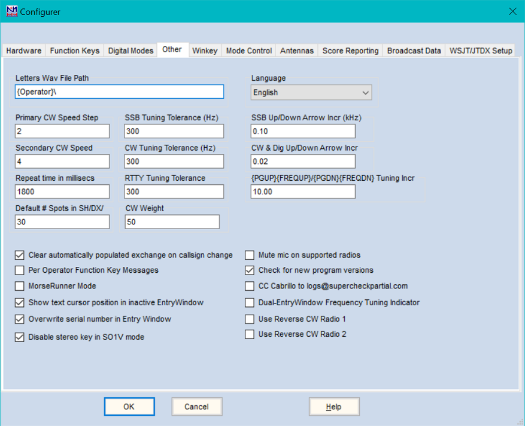
A aba Other é usada para definir valores padrão e selecionar modos e funções especiais.
Descrição dos campos da aba Other
- DVK Letters File Path – Especifica o subcaminho (relativo à subpasta Wav\LettersFiles na área de arquivos de usuário do N1MM Logger+) onde o programa vai procurar arquivos individuais de letras e números para voicing de indicativos e números seriais em SSB. Você pode usar {WAVDIR}\ ou {OPERATOR}\ neste caminho, fazendo com que cada operador (definido via OPON ou Ctrl+O) tenha sua própria subpasta de arquivos de letras (ou subpastas, usando {WAVDIR}) dentro do diretório wav\LettersFiles
- Primary CW Speed Step – O incremento de velocidade primário é usado com as teclas PgUp/PgDn ou os botões de ajuste de velocidade na Entry Window
- Secondary CW Speed – O incremento de velocidade secundário é usado com Shift+PgUp/PgDn. Alt+PgUp/PgDn ajusta a velocidade de CW do rádio/VFO inativo em modo SO2R/SO2V
- Repeat time in millisecs – Define o intervalo de repetição do CQ na Entry window (Auto-CQ). O padrão é 1,8 segundos. Informe um valor em segundos ou milissegundos. O valor máximo é 32767. Equivale a Ctrl+R ou 'Config | Set CQ repeat time' na Entry Window
- Default # Spots in – O número de spots retornado pelo comando SH/DX na janela Bandmap. O padrão é 30 spots. O número de spots retornado pelo comando SH/DX na janela Telnet não é afetado por este valor e precisa ser alterado na janela Telnet Options
- SSB Tuning Tolerance (Hz) – Modo SSB: clicar em cima ou perto de uma estação na janela Bandmap coloca o indicativo no quadro de indicativo (se o campo estiver vazio) da Entry window. Este valor define a distância máxima de frequência, no Bandmap, para que isso aconteça. O valor deve estar entre 0 e 20000 (20 kHz). O padrão é 300
- CW Tuning Tolerance (Hz) – Modo CW: mesmo comportamento acima, para CW. O valor deve estar entre 0 e 20000 (20 kHz). O padrão é 300
- RTTY Tuning Tolerance – Modo RTTY: mesmo comportamento acima, para RTTY. O valor (em Hz) deve estar entre 0 e 20000 (20 kHz). O padrão é 300
- CW Weight – Ajusta o peso do CW (entre 30% e 70%). O padrão é 50. Este ajuste vale tanto para CW por porta serial ou LPT quanto para o Winkeyer
- SSB Up/Down Arrow Incr – Define o salto de frequência (em kHz) das setas para cima/baixo, ou ao girar a roda do mouse, em SSB. Defina 0,00 para desabilitar
- NB. Nunca defina um valor menor que o menor passo que seu rádio consegue fazer em SSB. Rádios Icom mais antigos têm passo mínimo de 100 Hz, que já é bem grande. Quando o passo é definido menor que o passo mínimo do rádio, as setas para cima/baixo parecem não funcionar. Também controla a quantidade de cada mudança de frequência ao ajustar o RIT em rádios que suportam isso pelo computador
- CW Up/Down Arrow Incr – O mesmo que acima, para CW e modos digitais
- NB. Nunca defina um valor menor que o menor passo que seu rádio consegue fazer em CW. A maioria dos rádios tem passo mínimo da ordem de 10 Hz. Também controla o RIT, como acima
- PgUp/PgDn Incr (kHz) – Define o salto de frequência das macros {PGUP} e {PGDN} (Nota: as teclas PgUp e PgDn físicas não são usadas para isso; é preciso usar as macros {PGUP} e {PGDN} em mensagens de tecla de função. Esses nomes de macro são heranças de versões antigas do N1MM Logger Classic)
- Clear automatically populated exchange on callsign change – Quando marcada, se o indicativo na Entry window for alterado pelo operador, esta opção limpa os campos de exchange que tinham sido preenchidos automaticamente (a partir de um arquivo Call History, de QSOs anteriores no contest, ou de um spot de Telnet). Não afeta dados de exchange preenchidos manualmente
- Per Operator Function Key Messages – Recurso pensado para situações multi-operador, onde é desejável ter mensagens de tecla de função diferentes conforme o operador logado no programa (via Ctrl+O ou o comando de texto OPON [indicativo]).
- Quando desmarcada, o arquivo de mensagens de tecla de função definido na aba Associated Files do Contest Setup é usado por todos os operadores. Qualquer operador pode modificar o arquivo em uso pelo Function Key Editor.
- Se um Associated File específico não estiver definido, o arquivo de mensagens Default daquele modo será usado
- Quando marcada:
- Se o indicativo da estação for igual ao do operador, o arquivo principal de mensagens associado ao contest é usado normalmente. Somente o operador com o indicativo da estação pode editar esse arquivo; edições feitas por outros operadores afetam apenas a cópia pessoal deles.
- Se o indicativo da estação for diferente do indicativo do operador, o arquivo de mensagens associado atual é copiado para um subdiretório do operador no primeiro OPON ou Ctrl+O daquele operador. Os arquivos do diretório do operador são carregados a cada login subsequente com OPON ou Ctrl+O. O operador com o indicativo da estação deve verificar se os arquivos de mensagens associados estão corretos antes de permitir que operadores com indicativos diferentes façam login, caso contrário qualquer erro no conjunto principal terá que ser corrigido individualmente por cada operador
- Não é necessário criar os diretórios de operador manualmente; o programa cria as subpastas necessárias automaticamente quando preciso. O diretório do operador é uma subpasta do diretório onde ficam os arquivos base de mensagens de tecla de função (ex.: C:\Users\[Login da Estação]\FunctionKeyMessages\), nomeada com o indicativo ou nome usado no comando Ctrl+O ou OPON
- Se quiser resetar e apagar os diretórios de operador, desmarque primeiro a opção Per Operator Function Key Message
- Se um arquivo base de mensagens associado não for encontrado, o arquivo Default [modo] é usado para criar um
- Quando desmarcada, o arquivo de mensagens de tecla de função definido na aba Associated Files do Contest Setup é usado por todos os operadores. Qualquer operador pode modificar o arquivo em uso pelo Function Key Editor.
- MorseRunner Mode – Marcar esta opção habilita um contest simulado usando um módulo MorseRunner integrado. Essa versão integrada usa as janelas Entry e Log do N1MM+ no lugar das janelas do MorseRunner que apareceriam se você o usasse como programa independente.
- Ao selecionar MorseRunner Mode e sair do Configurer, uma janela temporária aparece, permitindo personalizar os parâmetros do MorseRunner. Atualmente são suportados os contests CQWW e CQ WPX. Se um log de um contest não suportado estiver aberto ao sair do Configurer, um aviso será exibido e o MorseRunner Mode não será iniciado
- Se for a primeira vez que você seleciona o MorseRunner Mode, o N1MM Logger+ vai baixar automaticamente o programa MorseRunner e o banco de dados de indicativos (mr_db.txt) do servidor do N1MM Logger (é necessária conexão com a Internet)
- Se o MorseRunner Mode estava habilitado da última vez que o N1MM+ foi fechado, e um contest suportado estiver aberto ao reiniciar, você será perguntado se quer habilitar ou desabilitar o MorseRunner Mode para a sessão atual. Se um contest não suportado for aberto, o MorseRunner Mode será desabilitado
- O MorseRunner só consegue usar o dispositivo de som padrão. Se o N1MM Logger estiver configurado para SO1V ou SO2V, uma única instância do MorseRunner será iniciada, com os dois canais de áudio iguais. Em SO2R, duas instâncias serão iniciadas, cada "rádio" usando um canal de áudio separado
- O nível de áudio do MorseRunner é ajustado pelos controles de volume padrão do Windows. O nível do sidetone pode ser alterado com Ctrl-Alt-PageUp e Ctrl-Alt-PageDown. O sidetone pode ser totalmente silenciado marcando "Mute when sending" antes de iniciar o MorseRunner
- A frequência de áudio das estações trabalhadas pode ser alterada pelas setas para cima/baixo (RIT simulado)
- A frequência de áudio do sidetone das mensagens "transmitidas" pode ser alterada com Shift+Alt+PgUp/PgDn
- Ao iniciar o MorseRunner, você deve ouvir "ruído de banda". Para começar sua sessão, use a tecla ou botão F1 (ou Enter em modo Run com ESM habilitado) para enviar CQ. Depois de alguns CQs, você vai ouvir estações respondendo
- As mensagens de CW enviadas no modo MorseRunner são fixas dentro do próprio programa MorseRunner, ou seja, não refletem qualquer personalização feita nas suas teclas de função
- Note que atualmente apenas os contests simulados CQWW CW e CQ WPX CW são suportados. Você precisa selecionar um log CQWWCW ou CQWPXCW no N1MM Logger+ para usar o MorseRunner Mode (recomenda-se criar um novo log para essa finalidade em vez de usar um já existente)
- Show text cursor position in inactive EntryWindow – Usado em SO2R e SO2V. Quando marcada, mostra um indicador na Entry Window inativa de onde ficará o cursor de texto quando/se o foco do teclado for trocado para aquela janela. Diferente do cursor da Entry Window ativa, esse indicador não pisca
- Overwrite serial number in Entry Window – Quando marcada (padrão), ao mover o cursor para o campo de exchange em um contest de número serial, todo o número serial é selecionado, pronto para ser sobrescrito. Se desmarcada, o cursor é posicionado no fim do número serial em vez de selecioná-lo inteiro
- Mute mic on supported radios – Silencia o microfone durante a transmissão. Normalmente usado para inserir áudio por uma entrada do rádio diferente do microfone. O padrão é não silenciar
- Use apenas com o DVK próprio do Logger (arquivos wav). Não marque esta opção se você usa um DVR do rádio ou um DVK externo
- Rádios suportados: Tentec Orion e Elecraft K3
- Tentec Orion: se "Mute" estiver marcada, a entrada de microfone do Orion é silenciada e a entrada Aux é ativada durante eventos do voice keyer
- Check for new program versions – Ao iniciar, o programa verifica se há uma nova versão e, se houver, oferece para baixar e instalar. Se você recusar uma versão quando perguntado, não será perguntado novamente para aquela versão
- CC Cabrillo to logs@supercheckpartial.com – Habilita um botão de Email no menu que aparece ao gerar um arquivo Cabrillo, enviando automaticamente uma cópia para o site supercheckpartial.com, usado na criação dos arquivos master.scp. Requer um cliente de email configurado para enviar mensagens
- Dual-EntryWindow Frequency Tuning Indicator – Habilita uma indicação visual quando a frequência de um rádio muda, facilitando ver qual rádio mudou de frequência (QSY) em SO2V ou SO2R
- Use Reverse CW Radio 1 – Ao selecionar CW, envia um comando ao Radio 1 para usar Reverse CW (CW-R)
- Use Reverse CW Radio 2 – (somente SO2R) Ao selecionar CW no Radio 2, usa Reverse CW (CW-R)
- Disable stereo key in SO1V mode – Quando marcada (padrão), desabilita a tecla ~ (estéreo) no modo SO1V (sem efeito em SO2V ou SO2R). Desmarcar permite usar a tecla estéreo para ativar o subreceptor mesmo em modo SO1V
Winkey Tab (Aba do Winkeyer)
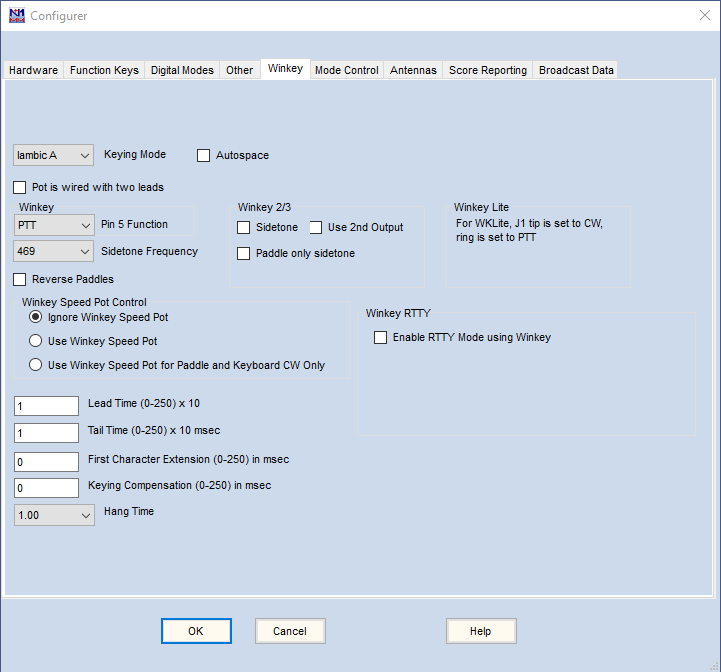
A aba Winkeyer controla funções de um chip Winkeyer da K1EL (ou clone 100% compatível). O Winkeyer foi projetado pela K1EL e G3WGV. Só fica ativa quando a caixa Winkeyer estiver marcada em uma porta serial, e essa porta (real ou virtual) estiver conectada a um keyer independente ou a um dispositivo que incorpore o chip Winkeyer, como vários produtos da MicroHAM e RigExpert. Consulte o manual do seu equipamento, além do manual do chip Winkeyer, para mais informações sobre estas configurações.
Para configurar uma porta para um Winkeyer (ou dispositivo que incorpore o chip), selecione o número da porta COM que o Windows atribuiu ao Winkeyer, marque a caixa CW/Other dessa porta, clique no botão Set e marque a caixa WinKey na janela que aparece. Não é necessário alterar mais nada nessa janela.
O Winkeyer recebe caracteres ASCII do N1MM Logger (via portas COM ou USB) e os converte em CW temporizado. A faixa de velocidade do potenciômetro vai de 10 wpm a 55 wpm. O Winkeyer também pode controlar o PTT, inclusive em modos diferentes de CW. Nota: isso só funciona nas versões 10 e 21 ou superiores do Winkeyer.
Normalmente só as saídas KEY1 e PTT1 de um Winkeyer 2 ou posterior são usadas. Não há como selecionar as saídas KEY2 ou PTT2 no lugar delas, com duas exceções. A primeira é em SO2R, onde é possível usar KEY2 e PTT2 a partir da segunda Entry window para o segundo rádio — veja a opção Use 2nd output abaixo. A segunda exceção envolve, com um Winkeyer 3.1, usar qualquer uma das quatro saídas para chaveamento FSK em RTTY — veja a opção Select Winkey RTTY Keying Port abaixo.
Descrição dos campos do Winkeyer
- Keying Mode – Selecione o modo de chaveamento. Opções: Iambic A, Iambic B, Ultimatic e Semi-Automatic. O padrão é Iambic B
- Autospace – Define quando o recurso de autospace deve ser usado. Ao enviar CW pela paddle, se uma pausa maior que um tempo de 'dit' for detectada, TRÊS tempos de dit de pausa serão inseridos antes do próximo caractere. Veja o manual para mais informações
- Pot is wired with two leads – Aplica-se apenas ao Winkey versão 1. Selecione quando o potenciômetro da placa estiver ligado com apenas dois fios em vez de três. Em operação normal, deixe desmarcada, a menos que você mesmo tenha construído o keyer ou o fabricante recomende
- Pin 5 Function – Válido apenas para o Winkey versão 1. Seleciona a função do pino 5. A menos que o manual do seu keyer diga o contrário, o padrão PTT é provavelmente o que você quer. As opções são:
- PTT (padrão)
- Sidetone
- 2nd CW (segunda saída; não use em SO2R — veja abaixo)
- None
- Sidetone Frequency – Seleciona a frequência do sidetone do Winkeyer. O padrão é 469 Hz
- Reverse Paddles – Inverte as paddles esquerda e direita
- Winkey Speed Pot Control – Três opções:
- Ignore Winkey Speed Pot (quando o N1MM+ está em execução)
- Use Winkey Speed Pot (ajusta a velocidade do N1MM+ conforme o potenciômetro)
- Use Winkey Speed Pot for Paddle and Keyboard CW only (habilita QRS para CW manual)
- Lead Time – Define o tempo de antecipação em incrementos de 10ms (até 2,55 segundos). É o tempo que o PTT do Winkeyer fica acionado ANTES de começar o chaveamento
- Se ao enviar CW você perde o primeiro ponto ou traço, ou se o CW por paddle parece não responder de imediato (novamente, perdendo o primeiro caractere), ajuste para pelo menos 10 mseg
- NOTA: este campo representa intervalos de 10 mseg — '1' nesta caixa significa 10 mseg
- Se a função do Pino 5 estiver definida como PTT, ajuste este valor para pelo menos 1 (10 mseg)
- Tail Time – Define o tempo de cauda em incrementos de 10 mseg (até 2,55 segundos). É o tempo que a linha de PTT do Winkeyer permanece acionada após o fim do chaveamento. Tail Time = 1 equivale ao tempo de um dit extra (Winkeyer v2.2; 10 mseg em versões anteriores). Tail Time = 2 soma mais 10 mseg, Tail Time = 3 mais 10 mseg, e assim por diante. Se Tail Time for zero, o Hang Time é usado no lugar
- First Character Extension – Define o tempo de extensão em passos de 10 mseg (até 2,55 segundos). Normalmente usado apenas com rádios mais antigos e lentos, em velocidades acima de 25 wpm; adiciona tempo ao primeiro elemento enviado para compensar a lentidão de comutação T/R desses rádios. Este valor costuma ser ajustado por tentativa. Veja o manual do Winkeyer para mais informações
- Keying Compensation – Normalmente usado apenas em operação QSK de alta velocidade (>30 wpm). Adiciona tempo (em incrementos de 1 mseg) tanto a traços quanto a pontos, para compensar atrasos de comutação do rádio. Veja o manual do Winkeyer para mais informações
- Hang Time – Mantém o PTT acionado durante o envio de CW pela paddle, de forma dependente da velocidade. Pode ser configurado para 1, 1,33, 1,67 ou 2 espaços de letra (não de dit) após o último fechamento da paddle. Sempre se aplica ao CW enviado por paddle. Para CW enviado pelo computador, o Hang Time só é usado se o Tail Time for zero. Veja o datasheet do Winkeyer para mais detalhes
- Winkeyer 2
- Sidetone – Gera um sidetone ao enviar CW (tanto por paddle quanto por comando do computador)
- Paddle only sidetone – Gera sidetone apenas ao enviar por paddle
- Use 2nd output – O Winkeyer 2 tem dois conjuntos de saídas de chaveamento, mas normalmente só KEY1 e PTT1 são usadas. Em SO2R, se esta opção estiver marcada, quando o foco de transmissão estiver na segunda Entry window, CW e PTT serão comutados para as saídas KEY2 e PTT2. Isso é conveniente para SO2R com CW mínimo, pois não é necessário hardware adicional para comutar CW e PTT entre rádios — mas você ainda vai precisar resolver a comutação do áudio recebido. Selecione esta opção para operação SO2R usando as duas saídas. Em SO2V ou SO1R, esta opção não suporta CW pelo segundo conjunto de saídas, mas pode ser usada para RTTY com um Winkeyer 3.1 ou superior, usando um conector de saída diferente do KEY1 (veja abaixo)
- Enable RTTY Mode using Winkey – (somente Winkeyer 3.1 ou superior) Marque esta opção e selecione Winkey como o TU Type na aba Digital Modes para usar o Winkeyer no chaveamento FSK de RTTY
- Select Winkey RTTY Keying Port (visível apenas se Enable RTTY Mode using Winkey estiver marcada) – selecione uma das outras saídas do Winkey (PTT1, KEY2 ou PTT2) para RTTY. A caixa Use 2nd output também precisa estar marcada para habilitar KEY2 ou PTT2
O ajuste de velocidade funciona como nos demais métodos de chaveamento. As teclas PgUp e PgDn aumentam ou diminuem a velocidade (padrão: passos de 2 WPM). Você também pode sobrescrever o valor na janela de velocidade, ou usar as setas para cima/baixo. Shift+PgUp/PgDn aumenta ou diminui a velocidade em um passo maior (padrão: 4 WPM). Os dois tamanhos de passo são configuráveis pelo usuário, na aba Other do Configurer.
Se a opção de ignorar o potenciômetro de velocidade não estiver selecionada, ajustar a velocidade pelo potenciômetro altera TANTO a velocidade da paddle quanto a velocidade de envio do N1MM. Ajustar a velocidade pela Entry window altera as duas também, mas SOMENTE ATÉ a próxima vez que o potenciômetro for ajustado, ou seja, a posição absoluta do potenciômetro sobrepõe qualquer mudança feita na Entry window.
O peso de CW do Winkeyer pode ser ajustado na aba Other, mas raramente é alterado do padrão de 50%.
Mode Control Tab (Aba de Controle de Modo)
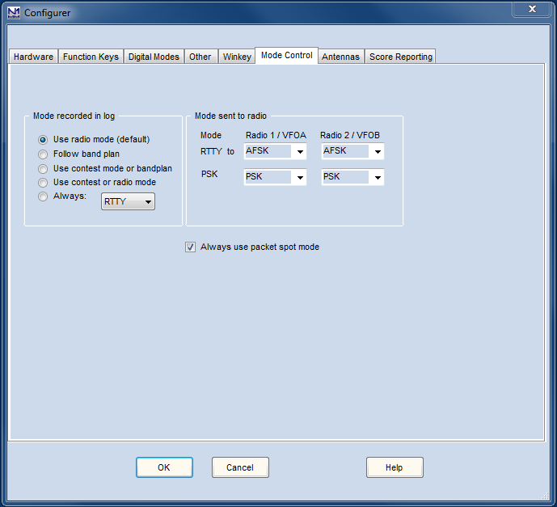
A aba Mode Control determina como (e se) o modo será controlado no rádio conectado, se o programa define o modo ao mudar de frequência ou não, e para qual modo ele muda. Esta janela também controla o modo usado ao logar contatos.
Modo logado vs. modo do rádio
Em um mundo ideal, o modo no log, o modo do rádio e o modo no software seriam sempre o mesmo. Para os modos tradicionais de voz e CW chaveado (CW, USB, LSB, AM, FM), isso realmente se verifica. Com a óbvia exceção de rádios que não suportam todos esses modos, há uma correspondência direta entre os nomes dos modos no rádio, no software e no log. Se esses fossem os únicos modos existentes, sempre seria possível mudar o modo no rádio e o software acompanhar (ou vice-versa) sem risco de confusão ou erro, e não haveria necessidade de configurações de controle de modo.
Porém, quando os modos digitais entram em cena, essa correspondência direta se desfaz. Qualquer rádio com SSB pode ser usado para modos digitais via placa de som, mesmo que o rádio não tenha nenhum modo digital nativo. Isso gera uma relação de muitos-para-um (vários modos diferentes no log podem corresponder a um único modo no rádio). No caso do RTTY, alguns rádios têm um modo RTTY nativo usando chaveamento FSK, e quando existe, esse modo é associado exclusivamente ao RTTY e a nenhum outro modo digital no log. Porém o inverso não é verdade; dependendo da configuração de hardware e da escolha do operador, o RTTY no log pode corresponder tanto a RTTY quanto a SSB no rádio. Em alguns rádios, também pode haver um ou mais modos adicionais voltados especificamente para AFSK RTTY ou para modos digitais de placa de som em geral. Os fabricantes de rádios usam uma variedade confusa e inconsistente de nomes para esses modos.
Para informações sobre controle de modo do seu rádio específico, consulte a seção Supported Radios. Em particular, para a correspondência entre os nomes de modo usados no lado direito da janela Mode Control do Configurer e os nomes usados pelo fabricante do rádio, veja a tabela Digital Mode Mapping. Veja o quadro "Digital Mode Selection" abaixo para mais detalhes.
Por causa dessa quebra na correspondência direta, um sistema de prioridade "rádio primeiro" não pode ser aplicado em todas as situações — uma vez envolvidos modos digitais, definir o modo no rádio nem sempre identifica de forma única o modo que deve ser logado. Por isso, a regra principal é "software primeiro". Definir o modo no software sempre controla o que o rádio faz. Você pode selecionar o modo no software simplesmente digitando o nome do modo (CW, SSB, USB, LSB, AM, FM, RTTY, PSK) no campo de indicativo da Entry window e pressionando Enter. Desde que o modo escolhido seja suportado pelo contest (determinado pela categoria Mode na janela Contest Setup), o software e o rádio vão mudar para o modo comandado, e esse será o modo logado. Ao usar o mecanismo digital MMVARI ou Fldigi, o modo digital específico logado depende do que foi selecionado dentro do próprio mecanismo digital. Como nem todos os rádios usam o mesmo modo de rádio para modos digitais, há ajustes no lado direito da janela de controle de modo que determinam qual modo de rádio é usado para RTTY e para PSK.
Troca automática de modo
Apesar da falta de uma correspondência direta completa entre os modos no log e no rádio, há muitas situações em que algum grau de troca automática de modo é possível, com base no modo do rádio ou na frequência, dentro dos limites impostos pela configuração do contest atual (ou seja, quais modos são suportados no contest atual). As configurações que controlam se esse tipo de automação é usado, e com base em quê, ficam no lado esquerdo da janela de controle de modo.
Uma dessas opções é usar o bandmap. Isso pode funcionar em um único contest de modo misto, onde os modos ficam bem separados em frequência. Infelizmente, isso não funciona em todas as situações. Durante grandes contests de CW, por exemplo, o CW pode ser usado por praticamente toda a sub-banda normalmente digital. Por outro lado, em um grande contest de RTTY, você pode encontrar RTTY sendo usado em frequências normalmente consideradas de CW. Por isso, usar o bandmap para determinar o modo não é uma opção infalível do tipo "configure e esqueça". Dependendo dos modos suportados pelo seu rádio e da natureza do(s) contest(s) em que você está operando, pode ser necessário escolher uma das outras opções.
O comportamento em modo digital é diferente
Há uma diferença no comportamento do controle de modo entre a situação em que a janela DI e a janela do mecanismo digital estão abertas e a situação em que estão fechadas. Isso se deve à forma como as portas seriais são usadas pelos mecanismos digitais e pelo Logger. Os mecanismos digitais são processos separados do resto do Logger, e uma única porta serial não pode ser compartilhada entre dois processos. Como as portas seriais podem ser um recurso escasso em uma estação de contest complexa, o Logger permite o compartilhamento no tempo de portas seriais entre usos digitais (FSK e PTT) e não digitais (CW e PTT). Ele faz isso alternando as portas entre os processos, dependendo se a janela DI está aberta ou não. Quando a janela DI é aberta, as portas seriais com a caixa Digital marcada no Configurer são fechadas pelo Logger, para que possam ser abertas pelo mecanismo digital. Quando a janela DI é fechada, essas portas são liberadas para que o Logger possa reabri-las em outros modos.
Assim, o fato de a janela DI estar aberta ou fechada pode fazer uma diferença significativa na configuração de hardware. Sempre que uma porta serial é compartilhada no tempo entre o Logger e um mecanismo digital, essa porta não pode ser usada para PTT ou chaveamento de CW em modos não digitais enquanto a janela DI estiver aberta.
Para dar suporte a uma ampla gama de configurações de hardware de forma independente do hardware, o controle de modo no Logger depende de a janela DI estar aberta ou não. Quando fechada, o controle de modo "rádio primeiro" funciona entre modos não digitais, mas mudar o modo do rádio para (ou através de) um modo digital, ou sintonizar a frequência do rádio para dentro de (ou através de) um segmento de banda digital, não abre a janela DI nem muda o software para modo digital. Para entrar em modo digital, a janela DI precisa ser aberta pelo software — usando a Entry window para selecionar o modo RTTY ou PSK em um contest que suporte modos digitais, ou pelo menu Window > Digital Interface.
Uma vez que a janela DI esteja aberta, mudar o modo no rádio não fecha a janela DI, e o software não sai do modo digital — ou seja, o controle de modo dirigido pelo rádio não funciona com a janela DI aberta. Mudanças de modo nesse estado precisam ser feitas pelo software. Se o software for comandado, pela Entry window, para usar um modo não digital, o mecanismo digital é fechado pelo software para liberar quaisquer portas compartilhadas no tempo para uso do Logger.
Descrição dos campos de Mode Control
- Mode recorded in log – Define como determinar o modo que será registrado no log
- Use radio mode (padrão) – se a janela DI não estiver aberta, o modo é determinado pela configuração de modo do rádio. Se a janela DI estiver aberta, o modo usado depende apenas do mecanismo digital, e não do modo recebido do rádio, como segue:
- Em modos digitais, o modo no log será RTTY se estiver usando o mecanismo MMTTY, 2Tone ou um TNC
- Ao usar o mecanismo MMVARI ou Fldigi, o modo será o selecionado na janela do MMVARI ou Fldigi (apenas modos digitais para o Fldigi)
- Follow band plan – o programa usa o modo que o plano de bandas define para aquela frequência. Para CW e Phone, isso afeta tanto o que é registrado no log quanto o que acontece ao clicar em um spot no Bandmap ou na janela Available Mults and Qs, mas não muda o rádio automaticamente para um modo digital ao clicar dentro de um segmento de banda digital
- Use contest mode or bandplan – Em um contest de modo único, esse modo é logado e enviado ao rádio. Se o contest for de modo misto (ex.: Russian DX Contest), o plano de bandas é seguido como acima
- Use contest or radio mode – Em um contest de modo único, esse modo é logado e enviado ao rádio. Em um contest de modo misto, o modo do rádio é usado
- Always: – sempre loga o modo selecionado aqui (CW, SSB, RTTY, PSK31, PSK63, PSK125), independentemente do modo definido no rádio
- Use radio mode (padrão) – se a janela DI não estiver aberta, o modo é determinado pela configuração de modo do rádio. Se a janela DI estiver aberta, o modo usado depende apenas do mecanismo digital, e não do modo recebido do rádio, como segue:
Ao usar "Follow band plan" para o Mode recorded in log, é fundamental que as sub-bandas estejam corretamente definidas na janela Bandmap, pois o programa vai logar os contatos usando o modo do plano de bandas configurado ali, independentemente do modo que você realmente estava usando. Não configurar corretamente os limites de sub-banda no Bandmap é uma causa frequente de erros de log.
- Mode sent to radio – Define como determinar o modo enviado ao rádio
- Aplica-se apenas a modos digitais, incluindo FT8/FT4, PSK31/PSK63 e RTTY. Veja a nota abaixo para detalhes
- A linha chamada RTTY é só para RTTY, já que o RTTY costuma usar um modo diferente no rádio dos demais modos digitais
- A linha chamada DIGI (a partir da versão 1.0.7937; antes chamada PSK) é para todos os modos digitais exceto RTTY, incluindo FT4/FT8 e PSK31/PSK63 etc.
- Se o seu rádio tiver modo(s) especial(is) para modos digitais de placa de som, os nomes na lista suspensa provavelmente não vão bater com os nomes do seu rádio. Veja o quadro abaixo
Cada rádio parece ter uma gama diferente de opções e nomes para modos digitais. Alguns não têm nenhum modo especializado para digital, alguns têm apenas um modo digital para FSK RTTY (para modos digitais de placa de som, você usa USB ou LSB), alguns adicionam a isso um modo separado destinado a modos de placa de som como AFSK RTTY, PSK31 e FT8, e alguns têm três modos digitais separados para FSK RTTY, AFSK RTTY e outros modos de placa de som como PSK31 e FT8. Também pode haver duas versões de cada um desses, uma "normal" e uma "reverse" (banda lateral oposta). Cada fabricante usa nomes diferentes para esses modos especializados.
Para simplificar, o N1MM Logger tem sua própria terminologia, independente do rádio. O Logger usa RTTY para o modo de rádio normalmente usado em FSK RTTY (geralmente chamado FSK ou RTTY no rádio, mas nem sempre). Se o rádio tiver um modo destinado a AFSK RTTY, o Logger o chama de AFSK (o fabricante do seu rádio pode ter outro nome, como LSB-D ou PKT-LSB). AFSK-R é o "reverso" desse modo AFSK, ou seja, na banda lateral superior em vez de LSB (podendo ser chamado de USB-D ou PKT-USB no rádio). Se houver um modo destinado a modos de dados por placa de som diferente do AFSK-R (como o modo DATA A no Elecraft K3/K3S), ele será chamado de PSK no Logger. Nem todo rádio tem todos esses modos, então nem todas as opções estarão necessariamente disponíveis, dependendo do(s) rádio(s) configurado(s).
A tradução entre o nome do modo usado no rádio e o nome usado no N1MM Logger está descrita na tabela Digital Mode Mapping, na seção Supported Radios.
Para RTTY, se você usa FSK, normalmente deve selecionar RTTY. Se usa AFSK, normalmente deve selecionar AFSK ou LSB/USB, dependendo se o seu rádio oferece um modo AFSK dedicado ou não.
Para outros modos digitais (incluindo PSK e modos WSJT), a escolha normalmente seria uma entre: PSK (se disponível, ex.: Elecraft K3/K3S), AFSK-R (em alguns rádios, ex.: IC-7300), ou USB (rádios mais antigos sem modo dedicado para digital por placa de som).
Caixa Always use packet spot mode:
Se marcada, clicar em um spot no Bandmap (ou pular para um spot pelo teclado) pode mudar o modo do rádio, dependendo se as notas do spot descrevem o modo, ou das configurações de sub-banda na janela Bandmap, e se a categoria Mode no Contest Setup inclui o modo do spot de packet, determinado pelas notas do spot ou pelo plano de bandas. Em um contest de modo único, você provavelmente não quer que o modo do rádio mude ao clicar em um spot, então esta opção não deveria estar marcada. Em um contest de modo misto, ou para log geral, você pode querer permitir que o modo do spot de packet mude o modo do rádio, mas nesse caso é importante configurar corretamente os limites de sub-banda de CW, Digital e SSB na janela Bandmap, caso contrário spots sem notas (ex.: muitos spots gerados por humanos) podem mudar o modo do rádio de forma indesejada.
Antennas Tab (Aba de Antenas)
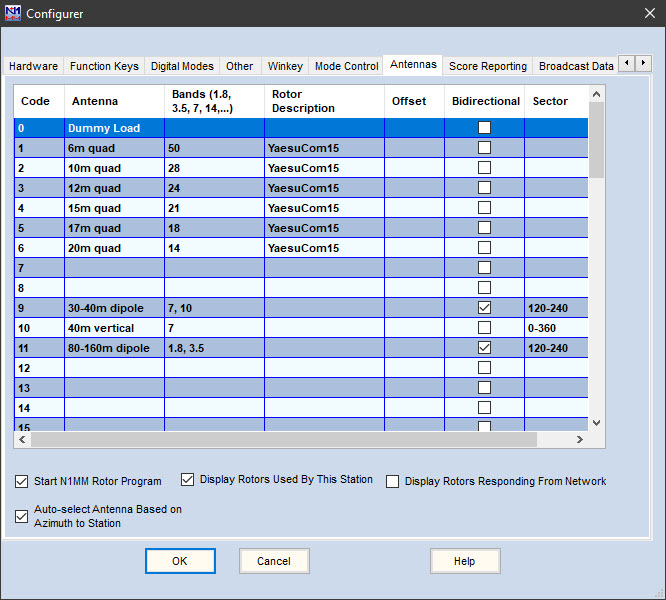
A aba Antennas define como as antenas podem ser selecionadas pelo programa, se você tiver o hardware apropriado, e também controla o programa de rotor. O exemplo acima ilustra os recursos desta aba.
O programa usa uma variedade de opções de interfaceamento relacionadas a antenas, dependendo do seu hardware e preferências. Por exemplo, a seleção de antena pode ser controlada usando um decodificador de banda (band decoder) em conjunto com valores BCD de 0 a 15 em uma porta LPT real. Note que adaptadores USB-paralela não funcionam nesta ou em outras funções de interfaceamento por porta paralela, pois não permitem controle individual dos pinos da porta pelo programa.
A seleção de antena também pode ser controlada por um de dois protocolos de porta serial: o protocolo proprietário MicroHam e o Open Two Radio Switching Protocol (OTRSP). Rotores podem ser controlados pelo N1MM Rotor Program, ou por diversos pacotes de software de terceiros que usam os broadcasts UDP enviados pelo N1MM Logger+.
Diferente da maioria dos transceptores e de alguns softwares de log, o N1MM não mapeia bandas pré-definidas para seu valor de saída de antena. Em vez disso, o N1MM mapeia antenas para saídas que variam de 0 a 63. Ainda é possível mapear por banda, mas a abordagem por antena é muito mais poderosa. Ela suporta múltiplas antenas por banda, stacks e múltiplas bandas por antena. Veja a captura de tela acima e as descrições de campos abaixo. É possível ter várias antenas para uma banda e usar Alt-F9 para alternar entre elas.
Descrição das colunas da aba Antennas
- Code – O código apresentado na porta LPT como saída binária codificada em decimal (BCD), usando os pinos 9, 8, 7 e 2. É também o código enviado a um dispositivo OTRSP, na mensagem AUX do OTRSP.
- Os códigos em si são predeterminados, de 0 a 63. Note que, usando uma porta LPT com saída BCD, os valores máximos representáveis vão de 0 a 15 (4 bits). No exemplo acima, nenhuma antena é definida para o Código 0 — isso porque, nesse caso, esse código é usado para selecionar operação automática pelo painel frontal da chave de antenas remota
- Cada linha desta tabela, e portanto cada código, representa UMA ANTENA, embora possa suportar mais de uma banda. Por exemplo, um código pode selecionar uma antena tribanda definida para 10, 15 e 20 metros
- A maioria das estações usa um decodificador de banda para receber o código enviado pelo N1MM e traduzi-lo em comandos de ativação para chaves de antena remotas. Pesquise "ham radio band decoders" para ver a lista de dispositivos disponíveis
- Antenna – Texto para descrever a antena. Aparece na barra de status da Entry window ao mudar de banda ou trocar de antena para uma banda. Use Alt+F9 para alternar entre todas as antenas definidas para a banda atual. Este texto, com a antena selecionada, aparece no lado centro-direito da Entry Window do N1MM
- Bands – As bandas em que esta antena será selecionada
- Liste as bandas em MHz. A lista válida é: 1.8, 3.5, 5, 7, 10, 14, 18, 21, 24, 28, 50, 70, 144, 222, 420, 902, 1240, 2300, 3300, 5650, 10000, 24000, 47000, 76000, 142000, 241000. Se a antena suporta mais de uma banda, separe-as por vírgula. Veja a captura de tela acima, com dipolos de banda dupla nas antenas de 30/40 metros e 80/160 metros. Note que a primeira antena da tabela sempre é selecionada ao mudar de banda. Pressione Alt+F9 para selecionar outras antenas definidas para a mesma banda. Na captura de tela acima, uma estação em 40 metros usaria Alt+F9 para alternar entre o dipolo e a vertical.
- Uma antena pode ser usada em qualquer número de bandas
- Rotor Description – informe a descrição definida na configuração do programa de rotor. Precisa ser exatamente igual nos dois lugares, pois esses nomes fazem a ligação entre os dois programas
- Mais de um rotor pode ser selecionado (separados por vírgula), por exemplo para girar um stack com mais de um rotor envolvido
- Offset – Este deslocamento é somado à posição do rotor para determinar a posição da antena. Útil para antenas montadas a 90 graus por motivos de interferência de padrão, ou que simplesmente giraram um pouco com o vento durante o inverno. O offset também pode ser definido no rotor selecionado dentro do programa de rotor
- Bidirectional – Marque se a antena pode ser configurada como bidirecional (0 = não bidirecional, 1 = bidirecional) (por exemplo: dipolos e antenas Steppir)
- Sector – Para antenas estacionárias (que não giram). Descreve os rumos de bússola do padrão de transmissão da antena, separados por hífen. Por exemplo: 45-90. Defina uma antena omnidirecional como 0-360. O N1MM reconhece automaticamente uma antena bidirecional como cobrindo o setor definido e seu oposto. Veja a descrição da opção "Auto-Select Antenna Based on Azimuth to Station" abaixo
Opções na janela de diálogo de Antenas
- Start N1MM Rotor Program – Inicia o programa N1MM Rotor automaticamente a partir do programa principal do N1MM Logger+. É preciso pará-lo manualmente
- Display Rotors Used By This Station
- Display Rotors Responding From Network
- Auto-Select Antenna Based on Azimuth to Station – Seleciona uma antena (Code) com base na antena que 1) corresponde à banda e 2) corresponde à direção para a localização da estação informada no campo de indicativo da Entry Window. Para estações com múltiplas antenas estacionárias apontadas para direções diferentes (por exemplo: Europa, América do Sul, Ásia), a antena selecionada será a que cobrir o padrão de transmissão para aquela banda. Se não houver correspondência direcional, o N1MM simplesmente escolhe a primeira antena listada para a banda.
DICA: defina uma antena "pega-tudo" com setor 0-360 como a última antena listada para uma banda. Se nenhuma antena estacionária cobrir o azimute até uma estação, o N1MM recorre à antena padrão 0-360. Exemplo 1: estação Big Gun tem antenas estacionárias de 20 metros para EU e SA, e uma beam rotativa para as demais direções. Defina a beam rotativa depois das outras antenas de 20 metros, com Sector = 0-360. Exemplo 2: estação Little Pistol tem um dipolo bidirecional de 40 metros favorecendo Norte-Sul, e uma vertical para as demais direções. Defina o dipolo como 120-240 e a vertical como 0-360. Exemplo 3: estação de bandas baixas tem uma vertical omnidirecional em 160 metros e quatro beverages de recepção para Norte (325-45), Sul (135-225), Leste (45-135) e Oeste (225-325). Defina quatro "antenas" para 160 metros, e use seu decodificador de banda para selecionar a vertical mais a beverage direcional correspondente
Para ver um vídeo curto que descreve a diferença entre a alternância por Alt+F9 e a comutação baseada em setor, veja o vídeo na página original em inglês.
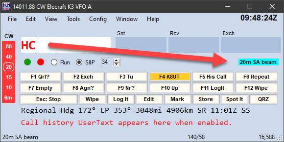
Score Reporting Tab (Aba de Envio de Pontuação)
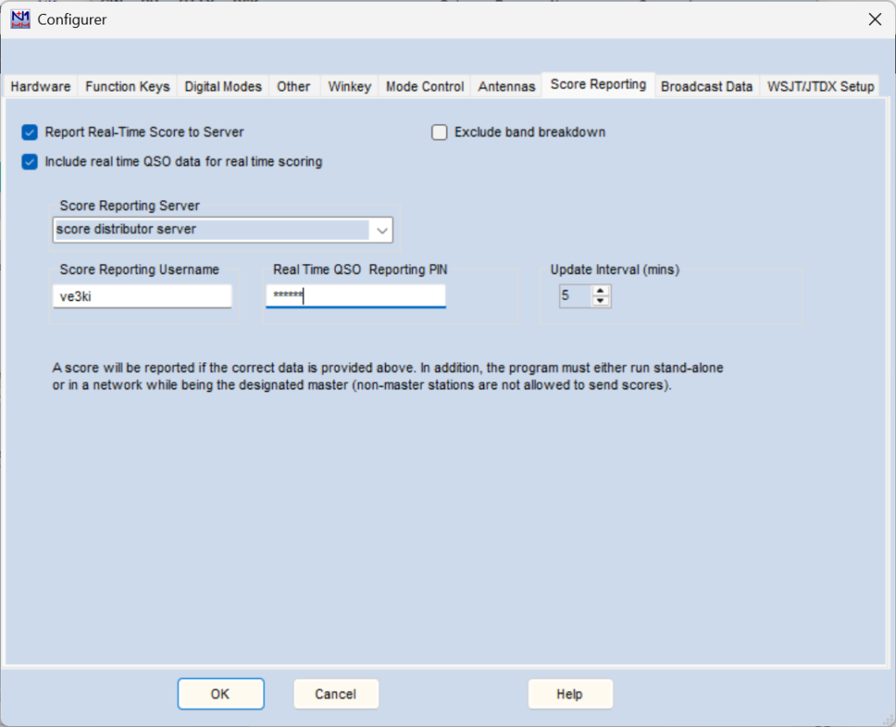
No N1MM Logger+, a função de envio de pontuação em tempo real (Real-Time Score Reporting) foi integrada ao restante do programa. Em vez de marcar uma caixa na aba Other do Configurer para iniciá-la, agora ela tem sua própria aba no Configurer.
A seguir, da esquerda para a direita, as opções que você precisa configurar para usá-la.
- Report Real-Time Score to Server – marque esta caixa para começar a enviar pontuações em tempo real. Ela fica selecionada até você desmarcá-la
- Exclude band breakdown – se por motivos competitivos você não quiser revelar sua distribuição de pontos por banda (e sua estratégia de troca de banda), marque esta caixa
- Include real time QSO data for real time scoring – envia dados de QSO ao site de pontuação em tempo real (experimental: faz conferência de log em tempo real)
- Score Reporting Server – O nome do servidor é editável. Uma das opções da lista suspensa é "score distributor server". Para a maioria dos usuários, esta é a escolha certa, pois encaminha as pontuações para todos os placares on-line. Se a caixa "Include real time QSO data..." estiver marcada e o contest for um dos suportados pelo site de pontuação em tempo real, os dados de QSO também serão enviados para aquele site, além do envio normal de pontuação aos placares
- Score Reporting Username e Real Time QSO Reporting PIN (antigamente chamado Score Reporting Password; só aparece se a caixa de dados de QSO em tempo real estiver marcada) – Por motivos de segurança, os sites de pontuação em tempo real exigem que você registre seu indicativo e um PIN atribuído pelo sistema. Depois de registrado, informe-os nestes campos
- Update Interval – Ajustável de 2 a 60 minutos
Para confirmar que suas pontuações estão sendo enviadas, verifique logo acima do painel de texto inferior na janela Info. A cada envio e confirmação pelo servidor, uma notificação aparece ali.
Broadcast Data Tab (Aba de Broadcasts de Dados)
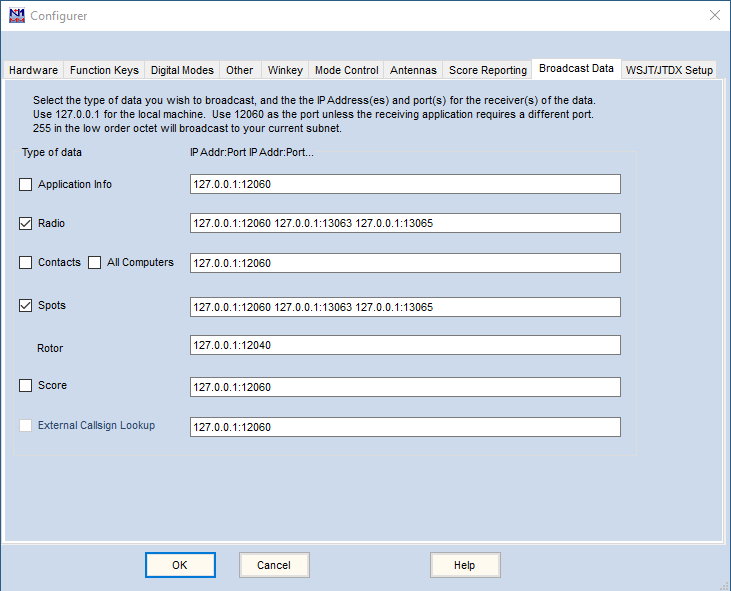
Broadcasts UDP externos contêm dados comunicados a outros programas em execução no mesmo computador ou em outro computador na rede. O uso feito dos dados do broadcast depende das capacidades do programa que os recebe. Alguns exemplos incluem o envio de dados de pontuação para um site de pontuação on-line, dados de rumo (bearing) para um programa de controle de rotor, e dados de contato para um programa de log de uso geral (para fins de log ou para facilitar a busca de outros dados disponíveis naquele programa). O conteúdo desses broadcasts está detalhado na página Appendices > External UDP Broadcasts desta documentação.
Para habilitar broadcasts UDP externos, antes de dezembro de 2015 era preciso adicionar manualmente algumas linhas ao arquivo N1MM Logger.ini. Essa função de edição agora foi incorporada à aba External Broadcasts do Configurer, mostrada acima. Se você já usava External Broadcasts antes dessa mudança, o conteúdo da sua seção External Broadcast existente deve aparecer refletido na aba. Por exemplo, se o seu ini já tem IsBroadcastContact=True, a caixa Contact na aba deve aparecer marcada.
Para configurar seus broadcasts UDP, decida quais broadcasts habilitar marcando a caixa correspondente, e preencha os endereços IP e portas UDP para onde cada broadcast deve ir. Normalmente, broadcasts UDP são usados para se comunicar com outros programas; comece revisando a documentação do programa com que você quer se comunicar, para saber em qual porta ele espera receber dados. Na maioria dos casos, o número da porta será 12060, o padrão.
Ao preencher os endereços IP e números de porta de cada broadcast, informe o endereço IP de 4 partes, separado do número da porta por dois-pontos. Cada par IP/Porta é separado do próximo por um único espaço, como no exemplo na aba.
Você pode começar com o endereço IP 127.0.0.1 (o próprio PC onde o N1MM+ está rodando) e adicionar os endereços IP de outros PCs. Para cada computador receptor, separe o endereço e o número da porta com dois-pontos (:), como na ilustração. Note que também é possível especificar o nome do computador no Windows (até 15 caracteres) em vez do endereço IP — uma abordagem recomendada para computadores locais.
Normalmente, redes domésticas são todas uma única "sub-rede". A maioria usa 192.168.0 ou 192.168.1 para designar a sub-rede, mais um número de 3 dígitos na última parte que identifica o computador específico. Geralmente esses números são atribuídos automaticamente pelo roteador via DHCP, embora você possa ter a opção de fixá-los na configuração do roteador, o que ajuda a evitar confusão mais tarde.
Você pode enviar broadcasts UDP para todos os endereços IP da sub-rede especificando 255 na última parte, ou "octeto". Por exemplo, 192.168.1.255 envia para todos os computadores na sub-rede 192.168.1. Use 255 apenas na última parte/octeto, porque colocar esse número em uma parte anterior/mais significativa arrisca fazer um broadcast para a internet inteira. Embora os pacotes acabem sendo descartados pela internet, isso não vai deixar seu provedor muito feliz com você.
Detalhes dos dados de broadcast
Quando configurado corretamente, o N1MM Logger+ envia pacotes UDP externos para outras aplicações. Detalhes sobre esses pacotes estão na seção Appendices > External UDP Broadcasts desta documentação.
All Computers
Este comando só é útil no modo de Computador em Rede (Networked Computer). Quando marcado, junto com Contact, em qualquer estação da rede, essa estação vai retransmitir todo contato que receber para a porta UDP especificada. O formato XML é o mesmo usado em Contact.
Tenha cuidado ao usar este recurso. Múltiplas estações mal configuradas com All Computers marcado podem criar um caminho de rede circular.
Spots
O N1MM Logger+ envia pacotes UDP externos sobre spots (incluindo spots gerados internamente e spots recebidos de clusters Telnet) para outras aplicações. Detalhes desses pacotes estão na seção Appendices > External UDP Broadcasts desta documentação.
Log data input from other programs (Entrada de dados de log de outros programas)
Nota: a partir da versão 1.0.7860, essas configurações foram movidas da aba Broadcast Data para uma nova aba WSJT/JTDX Setup no Configurer.
O N1MM+ pode receber dados de log de outros programas, seja por pacotes UDP (JTAlert, WSJT-X, JTDX), seja por pacotes TCP (JTDX). Para habilitar isso na versão 1.0.7845 ou anterior do N1MM+, marque a caixa Enable em uma das duas seções na parte inferior da janela. Também pode ser necessário fazer alguma configuração no programa remetente, WSJT-X ou JTDX (o JTAlert não precisa de configuração especial). Se os dois programas rodarem no mesmo computador, o endereço IP e a porta padrão devem funcionar, mas se necessário, para configurações mais complexas, o endereço IP e a porta podem ser alterados aqui.
Se o WSJT-X ou JTDX for chamado pelo menu Window > Load WSJT/JTDX na Entry Window, a caixa Enable superior precisa estar marcada, e a porta precisa ser 2237 (a menos que tenha sido alterada nas configurações do WSJT-X). Na janela de configurações do WSJT-X, aba Reporting, na área "UDP Server", a caixa "Accept UDP Requests" precisa estar marcada.
Se o programa de modos JT for executado de forma independente em vez de chamado pelo menu Window, como exigido pelo JTAlert e por alguns programas "clone" do WSJT que não podem ser chamados diretamente pelo menu Window > Load WSJT/JTDX da Entry Window (por não suportarem o método de servidor UDP que o N1MM+ usa para isso), pode ser necessário mudar o número da porta para 2333 (dependendo do programa). No WSJT-X, há uma área "Secondary UDP Server" (antes chamada "N1MM Logger+ Broadcasts") no fim da janela de configurações, aba Reporting. Ao usar o WSJT-X de dentro do N1MM+, essa área não é usada (o botão Enable dessa área deve ficar desmarcado), mas ao rodar o WSJT-X (ou programa similar) de forma independente, pode ser necessário marcar o botão Enable e ajustar o número da porta no Configurer do N1MM+ para corresponder ao número dessa área.
Para mais informações sobre configurar e operar com o WSJT-X ou JTDX, veja a página Window > WSJT Decode List deste manual.
Se você está chamando o WSJT-X ou JTDX de dentro do N1MM+, não é possível usar o JTAlert ao mesmo tempo, pois ele usa a mesma porta UDP que o N1MM+, e a porta não pode ser compartilhada.
Audio Tab (Aba de Áudio)
Esta aba não está mais disponível nas versões atuais do Logger. Ela existe apenas na versão antiga para Windows XP do programa.
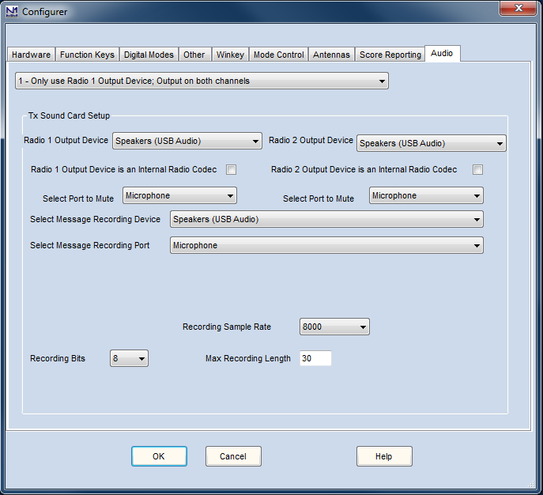
Se você marcou o item "Use Logger+ audio" no menu Config da Entry window (não disponível no Windows XP), a aba "Audio" não vai aparecer no Configurer. No lugar dela, use o item "Logger+ Audio Setup" no menu Config para configurar o áudio do Logger+.
Sempre que você trocar a placa de som padrão no Painel de Controle do Windows enquanto o N1MM Logger+ estiver rodando, você precisa fechar e reabrir o N1MM Logger+. Caso contrário, o programa e o sistema operacional podem ficar "em páginas diferentes", fazendo com que funções de áudio parem de funcionar ou funcionem de forma estranha. Além disso, toda vez que você trocar a placa de som padrão do Windows, será preciso voltar a esta aba e reconfigurar suas opções de áudio.
Introdução a Áudio e Placas de Som
Usuários do N1MM Logger Classic podem se lembrar de quando removemos a função de gravação de QSO desta aba, em favor de um gravador separado, o QSOrder, de K3IT. A gravação de QSO é configurada ali, e não no Configurer. Atualmente, a aba Audio do Configurer só controla configurações usadas para reprodução de mensagens de voz armazenadas e para gravação dessas mensagens. Isso inclui regravação "on the fly", como pode ser necessário em contests para operação SSB split em 40 metros, por exemplo.
Se o seu computador usa Windows XP SP3, esta é a única configuração de áudio disponível para você. Em sistemas operacionais mais novos, você pode usar esta configuração ou a nova janela de configuração de áudio do Logger+, encontrada no menu Config da Entry window. Se marcar essa opção no menu Config, a aba Audio do Configurer deixa de aparecer, e você vai precisar usar a janela de configuração de Áudio do menu Config. Por outro lado, se você usa XP, essas entradas do menu Config não vão aparecer.
Se você está configurando esta aba pela primeira vez, um bom começo é se familiarizar com a(s) placa(s) de som do seu computador. Ao mesmo tempo, você pode se certificar de que todas as configurações de áudio do computador estão corretas para gravar do microfone e reproduzir para a entrada de áudio do rádio (microfone ou linha). Um procedimento passo a passo está na seção de Interfaceamento do Getting Started. Um tratamento muito mais detalhado sobre o uso de mensagens armazenadas em contests de SSB está na seção de Function Keys, em Special Measures for SSB Function Keys.
Audio Output
- 1 – Only use Radio 1 Output Device, Output on both channels
- Um rádio e uma placa de som, para reproduzir mensagens armazenadas, gravar ou regravar mensagens, e silenciar o microfone ao reproduzir mensagens armazenadas
- Use esta opção com dois rádios se você estiver usando placas de som separadas para os dois rádios
- 2 – Two Radio, Output left channel on left radio, right channel on right radio
- Use esta opção se estiver usando uma única placa de som para reproduzir arquivos de mensagem para dois rádios separados em SO2R (um canal para cada rádio)
Tx Sound Card Setup
É aqui que a coisa fica um pouco mais complicada, principalmente por causa das diferenças na forma como o Windows XP lida com placas de som, comparado ao Vista, 7 e versões posteriores.
No Windows XP,
- Select Radio 1 Output Device – Selecione a placa de som usada para enviar mensagens armazenadas (arquivos .wav) no Radio 1
No Windows Vista e sistemas posteriores, a lista suspensa mostra as portas de saída (reprodução) disponíveis no computador, incluindo as de múltiplas placas de som, se houver mais de uma.
Se houver um CODEC embutido no Radio 1, escolha-o (CODEC é usado aqui e em outras partes deste manual como sinônimo de placa de som). Caso contrário, escolha a porta Line Out ou Speaker Out da placa de som conectada à entrada de áudio do Radio 1.
No Windows XP, a lista suspensa mostra as placas de som disponíveis no computador; escolha o CODEC embutido do Radio 1 ou a placa de som cuja porta Line Out ou Speaker Out está conectada à entrada de áudio do Radio 1.
- Select Radio 2 Output Device – O mesmo que para o Radio 1
CODEC
Placas de som embutidas estão apenas começando a aparecer em transceptores de nova geração.
- Radio 1 Output Device is an Internal Radio Codec – Marque se você usa um CODEC embutido no Radio 1 em vez de uma placa de som separada
- Radio 2 Output Device is an Internal Radio Codec – Marque se você usa um CODEC embutido no Radio 2 em vez de uma placa de som separada
Select Port to Mute
Normalmente usado para silenciar o microfone durante a reprodução de mensagens armazenadas; selecione Microphone na lista suspensa. As duas opções são para Radio 1 e 2, da esquerda para a direita
Select Message Recording Device
Selecione a placa de som usada para gravar mensagens armazenadas para reprodução posterior em qualquer um dos rádios. No Windows Vista e versões mais novas, a lista suspensa mostra as portas de reprodução disponíveis no computador. Escolha uma porta que esteja na placa de som que você vai usar para gravar mensagens SSB. No Windows XP, selecione a placa de som que será usada para gravar mensagens SSB.
Você pode se perguntar o que portas de reprodução têm a ver com gravação — vamos só pedir que confie na gente. É necessário selecionar um dispositivo para que as portas de gravação apareçam (veja abaixo).
Select Message Recording Port
Depois de selecionar o dispositivo de placa de som, use esta lista suspensa para selecionar a porta de gravação que você vai usar no dispositivo selecionado para gravar mensagens SSB. Normalmente é a entrada de microfone
Recording Bits and Sample Rate
- Recording Bits – define como sua placa de som digitaliza os níveis de áudio analógico — de forma geral, quanto menor a taxa de bits, menor o arquivo, mas também menor a fidelidade
- Recording Sample Rate – define como sua placa de som digitaliza as frequências de áudio analógico. Selecione a taxa de amostragem para gravação. Quanto menor a taxa, menor o arquivo, mas pior a qualidade de áudio
- Max Recording Length – limite superior para a duração de uma mensagem gravada, em segundos
O Configurer permite escolher parâmetros que sua placa de som pode não suportar. Se você escolher um parâmetro não suportado pela sua placa, deverá ver o Erro 4 na linha de status da Entry Window ao tentar reproduzir uma mensagem, mas em algumas circunstâncias isso pode não acontecer. Nosso melhor conselho é verificar se as taxas de amostragem coincidem, e testar tudo antes do início do contest.
Isso pode ser complicado. Mesmo que a taxa de reprodução não seja especificada, algumas placas de som só reproduzem arquivos .wav gravados em uma taxa de amostragem específica, como 44,1 ou 48 kHz. Garanta que seus parâmetros de gravação coincidam com isso, ou você não vai ouvir nada das suas gravações (não pergunte como sabemos disso).
WSJT/JTDX Setup Tab (Aba de Configuração WSJT/JTDX)
A partir da versão 1.0.7860, as configurações relacionadas a WSJT e JTDX que antes ficavam nas abas Digital Modes e Broadcast Data foram movidas para uma nova aba WSJT/JTDX Setup no Configurer:
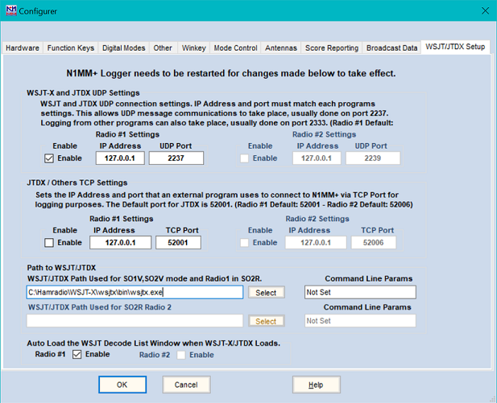
A parte superior desta página é onde você configura os endereços de porta UDP para comunicação com o WSJT-X ou JTDX. O endereço IP é o do computador onde o WSJT-X ou JTDX está rodando. Na situação mais comum, em que é o mesmo computador onde o N1MM+ roda, o endereço IP é o de loopback interno 127.0.0.1. A partir da versão 1.0.9600.0 do N1MM+, há suporte a endereços multicast (224.0.0.x ou 239.x.x.x), permitindo que outros programas, como JTAlert e GridTracker, se comuniquem com o WSJT-X em paralelo com o N1MM+. O mesmo endereço IP multicast deve ser usado em todos os programas que se comunicam entre si (ex.: 224.0.0.1 para o Radio 1, ou em configurações SO2R, 224.0.0.2 para o Radio 2).
Na configuração normal, quando o WSJT-X ou JTDX é executado a partir do N1MM+, a porta padrão é 2237. Se você estiver em modo SO2R e usando o WSJT-X ou JTDX a partir da segunda Entry window (EW2), é preciso configurar um número de porta UDP diferente para o Radio 2 (EW2) (a porta sugerida é 2239) — esse número de porta também precisa ser informado nas configurações do WSJT-X ou JTDX para a segunda Entry window, já que o padrão 2237 não seria correto para essa cópia.
Se você usa um programa de modos JT que não suporta o método de comunicação usado entre o N1MM+ e o WSJT-X ou JTDX, e por isso não pode ser chamado pelo menu Load WSJT/JTDX do N1MM+, ainda pode ser possível enviar dados de log daquele programa para o N1MM+ em outra porta UDP (geralmente a porta 2333). Se você usa um desses programas, configure a porta UDP do Radio 1 na parte superior desta janela para 2333 e ignore as demais configurações desta janela.
Se você usa o JTDX, ele precisa de uma porta TCP além da porta UDP. As configurações para isso ficam na próxima parte da janela (pode ignorar essas configurações se estiver usando o WSJT-X). Ao rodar um programa externo como o JTDX via TCP no mesmo computador que o N1MM+, o endereço IP normalmente será o de loopback (127.0.0.1). Ao rodar via TCP em um computador diferente do N1MM+, o endereço IP será o da interface de rede do computador que roda o N1MM+, como 192.168.1.101. A porta TCP padrão do JTDX é 52001. Em SO2R, a porta TCP sugerida para a cópia do JTDX do Radio 2 é 52006, e o número da porta nas configurações do JTDX para a segunda Entry window (EW2) precisa ser alterado para corresponder.
A próxima parte desta janela é onde se informa o caminho até o programa WSJT-X ou JTDX, para permitir que ele seja chamado pelo menu Window do N1MM+. A forma recomendada de informar esse caminho é clicar no botão Select e navegar, na janela de abertura de arquivo, até o local do programa wsjtx.exe ou jtdx.exe, clicando em Open. Como ilustrado na captura de tela, estações SO2R podem deixar os dois caminhos iguais. Há também uma caixa do lado direito da janela onde outros parâmetros de linha de comando podem ser informados; isso é opcional e, na maioria dos casos, não é usado.
No fim da página há duas caixas de seleção para habilitar a abertura automática da janela WSJT Decode List quando o WSJT-X ou JTDX é iniciado pelo menu N1MM+ Window > Load WSJT/JTDX. A segunda caixa só é usada em SO2R.
Para instruções sobre como usar o WSJT-X ou JTDX junto com a janela WSJT Decode List, veja a seção WSJT Decode List Window do manual.